The Silent Epidemic Hiding in Philippine Kidneys Ang Tahimik na Epidemya na Nagtatago sa Mga Bato ng mga Pilipino Ang Hilom nga Epidemya nga Nagtago sa mga Kidney sa mga Pilipino Ing Tahimik a Epidemya a Nagtatago king Deng Batu ning Deng Pilipino
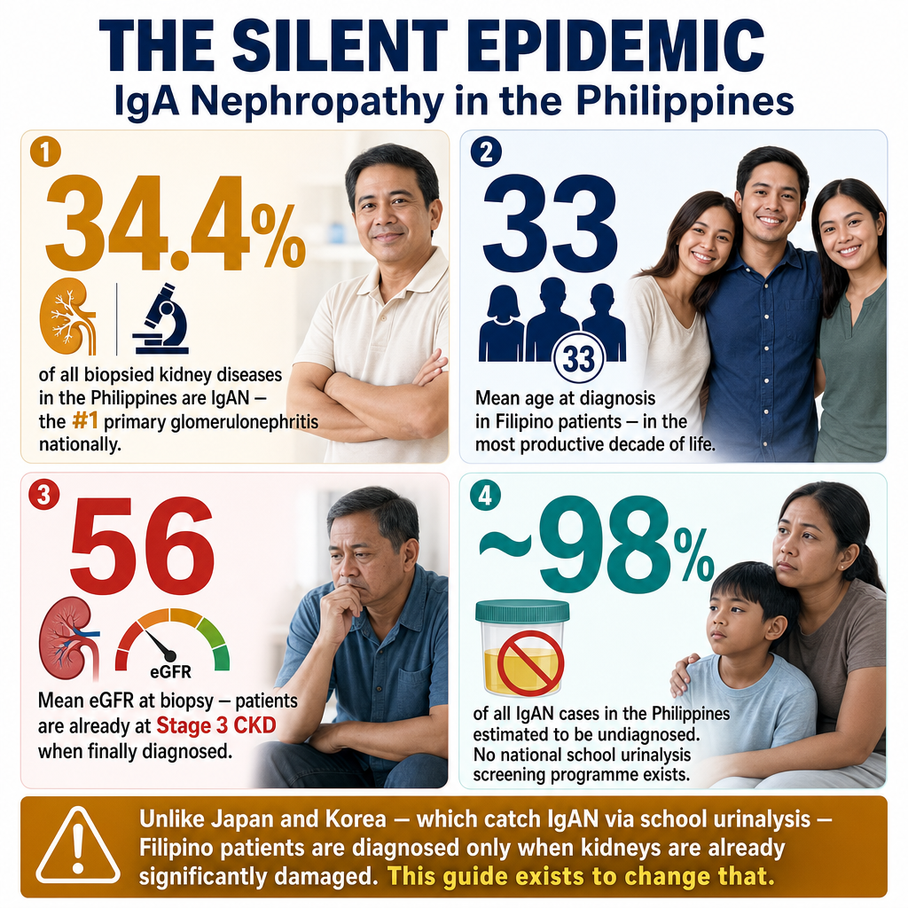
IgA nephropathy (IgAN) is the most common primary kidney disease in the Philippines. It accounts for 34.4% of all biopsied kidney diseases nationally. It peaks in the second and third decade of life — affecting Filipinos in their most productive years. It causes no symptoms for years while quietly destroying kidney function. And up to 98% of cases are never diagnosed because the Philippines has no national kidney screening program and biopsy access is concentrated in a handful of centers. By the time most Filipino patients are diagnosed, they are already in Stage 3 chronic kidney disease. This guide exists to change that — one informed patient at a time. Ang IgA nephropathy (IgAN) ang pinakakaraniwang pangunahing sakit sa bato sa Pilipinas. Ito ang 34.4% ng lahat ng na-biopsy na sakit sa bato sa buong bansa. Peak ito sa ikalawa at ikatlong dekada ng buhay — nakakaapekto sa mga Pilipino sa pinaka-produktibong taon nila. Walang sintomas sa loob ng maraming taon habang dahan-dahang sinisira ang kidney function. At hanggang 98% ng mga kaso ay hindi kailanman nadi-diagnose kasi walang national kidney screening program ang Pilipinas. Iting gabay, para baguhin iyon. Ang IgA nephropathy (IgAN) ang pinaka-kasagarang pangunahing sakit sa kidney sa Pilipinas. Kini ang 34.4% sa tanan nga gi-biopsy nga sakit sa kidney sa tibuok nasud. Peak kini sa ikaduhang ug ikatlong dekada — nakaapekto sa mga Pilipino sa labing produktibong mga tuig nila. Walay sintomas sa sulod sa daghan kaayo nga mga tuig samtang hilom nagguba sa kidney function. Ug hangtod 98% sa mga kaso wala gyuy nadi-diagnose. Kining giya para bag-ohon kana. Ing IgA nephropathy (IgAN) ing pinaka-karaniwang pangunahing sakit ning batu king Pilipinas. Iti ing 34.4% ning lahat ning na-biopsy a sakit ning batu sa buong bansa. Peak iti sa ikalawa at ikatlong dekada — nakakaapekto king deng Pilipino sa pinakaproduktibong mga taon nila. Ala sintomas sa loob ning maraming taon habang dahan-dahan sinisira ing kidney function. At hanggang 98% da ring mga kaso ali kailanman nadi-diagnose. Iting gabay, para baguhin iyon.
Why are so many cases missed?Bakit maraming kaso ang nami-miss?Nganong daghan kaayo ka kaso ang na-miss?Bakit maraming kaso ing nami-miss?
IgAN causes no obvious symptoms in its early stages. The only sign is often microscopic blood in the urine — invisible to the naked eye. Without a routine urinalysis, it goes undetected. The Philippines has no national school urinalysis screening program (unlike Japan and Korea, where IgAN is caught years earlier). Most Filipinos are only biopsied when their kidneys are already significantly damaged. Ang IgAN ay walang malinaw na sintomas sa maagang yugto. Ang tanging tanda ay madalas na microscopic na dugo sa ihi — hindi nakikita ng mata. Kung walang routine urinalysis, hindi ito mahahalata. Ang Pilipinas ay walang national school urinalysis screening program. Karamihan sa mga Pilipino ay na-biopsy na lamang kapag malubha na ang pinsala sa kanilang bato. Ang IgAN walay klaro nga sintomas sa sayo nga yugto. Ang bugtong timailhan kasagaran microscopic nga dugo sa ihi — dili makita sa mata. Kung walay routine urinalysis, dili kini mahibaw-an. Ang Pilipinas walay national school urinalysis screening program. Kadaghanan sa mga Pilipino gi-biopsy lang kung grabe na ang kadaot sa ilang kidney. Ing IgAN ala malinaw a sintomas sa maagang yugto. Ing tanging tanda madalas microscopic a daya king ihi — ali makita ning mata. Kung ala routine urinalysis, ali ito mahahalata. Ing Pilipinas ala national school urinalysis screening program. Karinan deng Pilipino na-biopsy na lang nung malubha na ing pinsala sa batu nila.
What Actually Happens Inside Your Kidneys Ano Talaga ang Nangyayari sa Loob ng Iyong Mga Bato Unsa Gyud ang Nahitabo Sulod sa Imong mga Kidney Nano Talaga ing Nangyayari sa Loob ning Deng Batu Mo

Your kidneys filter your blood constantly — about 200 liters every day. Each kidney has roughly one million tiny filters called glomeruli. In IgAN, a specific protein called IgA — which normally helps fight infections — misfolds and deposits itself in the glomeruli. Think of it like grime building up in a water filter. Over time, the accumulation triggers inflammation and scarring that permanently reduces the kidney's filtering capacity. The process unfolds in four steps scientists call the "four-hit hypothesis." Ang bato mo ay nagfa-filter ng dugo nang tuloy-tuloy — mga 200 litro bawat araw. Bawat bato ay may humigit-kumulang isang milyong maliliit na filter na tinatawag na glomeruli. Sa IgAN, isang tiyak na protina na tinatawag na IgA — na karaniwang tumutulong sa paglaban ng impeksyon — ay nami-misa-fold at namuo sa glomeruli. Isipin mo ito parang dumi na nagtitipon sa isang filter ng tubig. Sa paglipas ng panahon, nagiging sanhi ito ng pamamaga at pag-iipon ng peklat na permanenteng nagpapababa ng kakayahan ng bato na mag-filter. Ang imong kidney nag-filter sa dugo kanunay — mga 200 litro matag adlaw. Ang matag kidney adunay mga usa ka milyon ka gagmay nga mga filter nga gitawag og glomeruli. Sa IgAN, usa ka piho nga protina nga gitawag og IgA — nga kasagaran nagtabang sa pagpakig-away sa impeksyon — misa-fold ug nagdeposito sa glomeruli. Hunahunaa kini ingon hugaw nga nagatigom sa usa ka filter sa tubig. Sa paglabay sa panahon, nagdulot kini sa pamamaga ug pag-ipon sa piklat nga permanenteng nagpababa sa abilidad sa kidney sa pag-filter. Ing batu mo nagfa-filter ning daya nang tuloy-tuloy — mga 200 litro bawat aldo. Bawat batu maki humigit-kumulang metung a milyong maliliit a mga filter a tinatawag na glomeruli. Sa IgAN, metung a tiyak a protina a tinatawag na IgA — a karaniwang tumutulong sa paglaban ning impeksyon — nami-mis-fold at nagdeposito sa glomeruli. Isipin mo ito parang dumi a nagtitipon sa metung a filter ning tubig. Sa paglipas ning panahon, nagiging sanhi iti ning pamamaga at pag-iipon ning peklat a permanenteng nagpapababa ning kakayahan ning batu na mag-filter.
The gut makes abnormal IgAGumagawa ang bituka ng abnormal na IgAAng tinai nagbuhat og abnormal nga IgAGumagawa ing bituka ning abnormal a IgA
In IgAN, the immune cells in your gut lining produce an abnormal form of IgA called galactose-deficient IgA1 (Gd-IgA1). This protein lacks a sugar molecule it normally carries, which makes it "sticky" and hard for the body to clear. Think of it as a defective protein that overstays its welcome in your bloodstream. Sa IgAN, ang mga immune cell sa lining ng bituka ay gumagawa ng abnormal na anyo ng IgA na tinatawag na Gd-IgA1. Ang protinang ito ay kulang sa isang sugar molecule na karaniwang nasa kanya, na ginagawa itong "malagkit" at mahirap alisin ng katawan. Para itong may depektong protina na ayaw umalis sa iyong dugo. Sa IgAN, ang mga immune cell sa lining sa tinai naghimo og abnormal nga porma sa IgA nga gitawag og Gd-IgA1. Kining protina kulang sa usa ka sugar molecule nga kasagarang anaa niini, nga naghimo niini nga "mapilit" ug lisud papason sa lawas. Para siya'g depektibong protina nga dili gusto mopahawa sa imong dugo. Sa IgAN, deng immune cell sa lining ning bituka gumagawa ning abnormal a anyo ning IgA a tinatawag na Gd-IgA1. Iting protina kulang sa metung a sugar molecule a karaniwang nasa kanya, a gumagawa nito na "malagkit" at mahirap alisin ning katawan. Para itong may depektong protina a ayaw umalis sa daya mu.
The immune system attacks its own proteinInaatake ng immune system ang sarili nitong protinaGinaatake sa immune system ang kaugalingon nga protinaInaatake ning immune system ing sarili nyang protina
The body recognizes the abnormal Gd-IgA1 as foreign and produces antibodies (autoantibodies) against it — attacking its own protein by mistake. These antibodies latch onto the Gd-IgA1 and form large clumps called immune complexes circulating in the blood. Kinikilala ng katawan ang abnormal na Gd-IgA1 bilang dayuhan at gumagawa ng mga antibody laban dito — inaatake ang sariling protina nang mali. Ang mga antibody na ito ay kumakapit sa Gd-IgA1 at bumubuo ng malalaking tipak na tinatawag na immune complexes na lumalabas-labas sa dugo. Ginaila sa lawas ang abnormal nga Gd-IgA1 ingon langyaw ug nagbuhat og mga antibody batok niini — ginaatake ang kaugalingong protina sa sayop. Kining mga antibody nagkapit sa Gd-IgA1 ug nagbuhat og dagkong mga tipik nga gitawag og immune complexes nga naglibog sa dugo. Kinikilala ning katawan ing abnormal a Gd-IgA1 bilang dayuhan at gumagawa ning deng antibody laban dito — inaatake ing sariling protina nang mali. Deng antibody na ito kumakapit sa Gd-IgA1 at bumubuo ning malalaking tipak a tinatawag na immune complexes a lumalabas-labas sa daya.
Immune complexes lodge in the kidney filtersAng immune complexes ay natigil sa mga filter ng batoAng immune complexes natigok sa mga filter sa kidneyIng deng immune complexes natigil sa deng filter ning batu
The clumps of IgA complexes travel through the bloodstream and become lodged in the mesangium — the supporting tissue between your kidney's tiny filters. They accumulate there like sediment in a pipe. At this stage there are still often no symptoms, but the damage is already beginning silently. Ang mga tipak ng IgA complexes ay gumagalaw sa daloy ng dugo at natigil sa mesangium — ang supportive tissue sa pagitan ng mga maliliit na filter ng bato. Nagiipon sila doon parang sediment sa tubo. Sa yugtong ito, madalas wala pa ring sintomas, pero nagsisimula na ang pinsala nang tahimik. Ang mga tipik sa IgA complexes naglihok sa dugo ug natigok sa mesangium — ang supportive tissue tali sa gagmay nga mga filter sa kidney. Nagtipon sila didto ingon sediment sa tubo. Sa kining yugto, kasagaran walay sintomas pa, apan nagsugod na ang kadaot nga hilom. Deng tipak da ring IgA complexes gumagalaw sa daloy ning daya at natigil sa mesangium — ing supportive tissue sa pagitan da ring maliliit a filter ning batu. Nagiipon ra doon parang sediment sa tubo. Sa yugtong iti, madalas ala pa ring sintomas, pero nagsisimula na ing pinsala nang tahimik.
Inflammation destroys the filters — permanentlyAng pamamaga ay sumisira sa mga filter — nang permanenteAng pamamaga naglaglag sa mga filter — permanenteIng pamamaga sumisira sa deng filter — nang permanente
The deposited immune complexes activate the complement system — the body's inflammatory response. This triggers inflammation, scarring, and progressive destruction of the glomeruli. Once a glomerulus scars, it cannot regenerate. This is why IgAN does not get better, only slower with treatment. Symptoms like blood in the urine and protein leakage finally appear — often years after the process started. Ang mga nagtipon na immune complexes ay nag-a-activate ng complement system — ang inflammatory response ng katawan. Nagdudulot ito ng pamamaga, pag-iipon ng peklat, at progresibong pagkasira ng mga glomeruli. Kapag na-scar na ang isang glomerulus, hindi na ito makabawi. Kaya naman ang IgAN ay hindi gumagaling — mabagal lang sa treatment. Ang mga sintomas tulad ng dugo sa ihi at pagtagas ng protina ay lumalabas sa wakas — madalas ilang taon pagkatapos magsimula ang proseso. Ang mga nagtipon nga immune complexes nag-activate sa complement system — ang inflammatory response sa lawas. Nagdulot kini sa pamamaga, pag-ipon sa piklat, ug progresibong pagkaguba sa glomeruli. Kung na-scar na ang usa ka glomerulus, dili na kini makabawi. Mao kana nga ang IgAN dili moayo — mas hinay lang sa pagtambal. Ang mga sintomas sama sa dugo sa ihi ug pagtulo sa protina mogawas sa katapusan — kasagaran pipila ka tuig human sa pagsugod sa proseso. Deng nagtipon a immune complexes nag-a-activate ning complement system — ing inflammatory response ning katawan. Nagdudulot iti ning pamamaga, pag-iipon ning peklat, at progresibong pagkasira ning deng glomeruli. Nung na-scar na ing metung a glomerulus, ali na ito makabawi. Kaya naman ing IgAN ali gumagaling — mabagal lang sa treatment. Deng sintomas tulad ning daya sa ihi at pagtagas ning protina lumabas sa katapusan — madalas ilang taon pagkatapos magsimula ing proseso.
Who Gets IgAN — and Why Filipinos Are at Higher Risk Sino ang Nagkakaroon ng IgAN — at Bakit Mas Nasa Panganib ang mga Pilipino Kinsa ang Makakuha sa IgAN — ug Nganong Mas Peligro ang mga Pilipino Ninu ing Nagkakaroon ning IgAN — at Bakit Mas Nasa Peligro Deng Pilipino
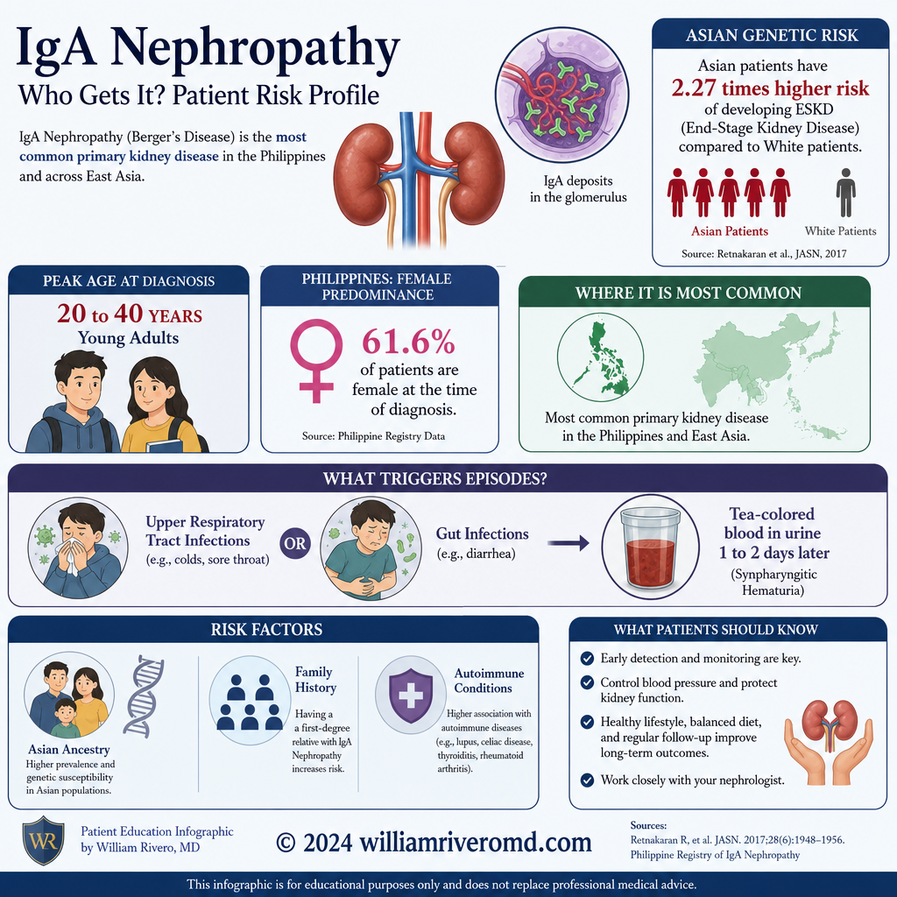
Asian Genetic RiskGenetic na Panganib ng mga AsyanoGenetic nga Peligro sa mga AsyanoGenetic a Peligro ning Deng Asyano
Pacific Asian populations carry specific genetic variants that increase both IgAN susceptibility and risk of progression. Chinese ethnicity carries a 2.27× higher risk of kidney failure vs Europeans. Filipino patients share overlapping genetic heritage with these populations. Ang mga Pacific Asian ay may specific na genetic variants na nagpapataas ng susceptibility sa IgAN at ng panganib ng pag-unlad nito. Ang Chinese ethnicity ay may 2.27× mas mataas na panganib ng kidney failure kumpara sa mga Europeo. Ang mga pasyenteng Pilipino ay may overlap sa genetic heritage ng mga populasyong ito. Ang mga Pacific Asian nagdala og specific nga genetic variants nga nagpataas sa susceptibility sa IgAN ug sa peligro sa pag-uswag niini. Ang Chinese ethnicity adunay 2.27× mas taas nga peligro sa kidney failure kumpara sa mga Europeo. Ang mga pasyenteng Pilipino adunay overlap sa genetic heritage sa kining mga populasyon. Deng Pacific Asian maki specific a genetic variants a nagpapataas ning susceptibility sa IgAN at ning peligro ning pag-unlad nito. Ing Chinese ethnicity maki 2.27× mas mataas a peligro ning kidney failure kumpara sa deng Europeo. Deng pasyenteng Pilipino maki overlap sa genetic heritage ning deng populasyong iti.
Age: 20s–30s PeakEdad: Pinaka-mataas sa 20–30 taonEdad: Pinakataa sa 20–30 ka tuigEdad: Pinaka-mataas sa 20–30 taon
IgAN most commonly appears between ages 16 and 35 — the peak working, studying, and child-rearing years. In the Filipino NKTI cohort, the mean age at biopsy was 33. Many patients are students or young professionals when diagnosed. Ang IgAN ay pinakakaraniwang lumalabas sa pagitan ng edad 16 at 35 — ang pinaka-produktibong mga taon. Sa Filipino NKTI cohort, ang katamtamang edad sa biopsy ay 33. Maraming pasyente ay estudyante o batang propesyonal kapag na-diagnose. Ang IgAN pinaka-kasagarang motungha sa taliwala sa edad 16 ug 35 — ang labing produktibong mga tuig. Sa Filipino NKTI cohort, ang kasagarang edad sa biopsy 33. Daghan sa mga pasyente estudyante o batan-ong propesyonal pag na-diagnose. Ing IgAN pinaka-karaniwang lumalabas sa pagitan ning edad 16 at 35 — deng pinaka-produktibong mga taon. Sa Filipino NKTI cohort, ing katamtamang edad sa biopsy 33. Maraming pasyente estudyante o batang propesyonal nung ma-diagnose.
Family HistoryKasaysayan sa PamilyaKasaysayan sa PamilyaKasaysayan ning Pamilya
Some forms of IgAN are hereditary. Alport syndrome, ADPKD, and some FSGS types run in families. If you are diagnosed with IgAN, siblings and parents may need screening. Ask your nephrologist about genetic counselling. Ang ilang anyo ng IgAN ay namamana. Ang Alport syndrome, ADPKD, at ilang uri ng FSGS ay nagmumula sa pamilya. Kung na-diagnose ka ng IgAN, maaaring kailangan ng mga kapatid at magulang na mag-screening. Tanungin ang iyong nephrologist tungkol sa genetic counselling. Ang pipila ka anyo sa IgAN gipanunod. Ang Alport syndrome, ADPKD, ug pipila ka tipo sa FSGS nagagikan sa pamilya. Kung na-diagnose ka og IgAN, mahimong kinahanglan og screening ang mga igsoon ug ginikanan. Pangutana ang imong nephrologist bahin sa genetic counselling. Ilang anyo ning IgAN namamana. Ing Alport syndrome, ADPKD, at ilang uri ning FSGS nagmumula sa pamilya. Kung na-diagnose ka ning IgAN, maaaring kailangan da ring mga kapatad at magulang na mag-screening. Tanungin ing nephrologist mu tungkol king genetic counselling.
Infection TriggersMga Trigger na ImpeksyonMga Trigger nga ImpeksyonDeng Trigger a Impeksyon
IgAN often flares after upper respiratory infections (tonsillitis, sore throat) or gastrointestinal infections — visible as tea-colored or red urine appearing 1–2 days after illness. This "synpharyngitic hematuria" is a classic presenting feature, especially in young patients. Ang IgAN ay madalas na lumala pagkatapos ng upper respiratory infections (tonsillitis, namamagang lalamunan) o gastrointestinal infections — nakikita bilang madilaw-dilaw na gatas o pulang ihi na lumalabas 1–2 araw pagkatapos ng sakit. Ito ay klasikong presentasyon, lalo na sa mga batang pasyente. Ang IgAN kasagaran naggrabe human sa upper respiratory infections (tonsillitis, namamaga nga tutunlan) o gastrointestinal infections — makita ingon kape-kape o pula nga ihi nga motungha 1–2 ka adlaw human sa sakit. Kini klasikong presentasyon, labi na sa mga batan-ong pasyente. Ing IgAN madalas lumala pagkatapos ning upper respiratory infections (tonsillitis, namamagang lalamunan) o gastrointestinal infections — nakikita bilang madilaw o pulang ihi a lumalabas 1–2 aldo pagkatapos ning sakit. Iti klasikong presentasyon, lalu na sa deng batang pasyente.
No Lifestyle CauseWalang Dahilang LifestyleWalay Hinungdang LifestyleAla Dahilang Lifestyle
Unlike most adult kidney disease which is caused by diabetes or hypertension, IgAN is primarily an immune system disorder. It is not caused by diet, smoking, or lifestyle choices. It can happen to anyone — and does not mean you did anything wrong. Hindi tulad ng karamihang sakit sa bato sa mga adulto na dulot ng diabetes o hypertension, ang IgAN ay pangunahing immune system disorder. Hindi ito dulot ng pagkain, paninigarilyo, o pamumuhay. Maaari itong mangyari sa sinuman — at hindi nangangahulugang may nagawa kang mali. Dili sama sa kadaghanan sa sakit sa kidney sa mga hamtong nga gidulot sa diabetes o hypertension, ang IgAN pangunahing immune system disorder. Dili kini dulot sa pagkaon, pamusigarilyo, o pamumuhay. Mahimo kini mabata sa bisan kinsa — ug wala kini nagpasabut nga nasayop ka. Ali tulad ning karinan sakit ning batu sa deng adulto a dulot ning diabetes o hypertension, ing IgAN pangunahing immune system disorder. Ali ito dulot ning pagkain, paninigarilyo, o pamumuhay. Maaari itong mangyari sa sinuman — at ali nangangahulugang may nagawa kang mali.
Pediatric & Young AdultsBata at Kabataang AdultoBata ug Batan-ong HamtongBata at Kabatan a Adulto
Philippine pediatric IgAN cases nearly doubled from 2022 to 2023 (16 to 31 cases at the 5 national centers). Children and teenagers can and do get IgAN. Pediatric cases are managed differently from adults — see our dedicated guide. Ang mga kaso ng pediatric IgAN sa Pilipinas ay halos nag-doble mula 2022 hanggang 2023 (16 sa 31 kaso sa 5 national centers). Ang mga bata at teenager ay maaaring at nagkakaroon ng IgAN. Ang mga pediatric na kaso ay iba ang pamamahala sa mga adulto. Ang mga kaso sa pediatric IgAN sa Pilipinas hapit nadoble gikan 2022 ngadto 2023 (16 ngadto 31 kaso sa 5 national centers). Ang mga bata ug teenager mahimong ug nagkuha og IgAN. Ang mga pediatric nga kaso lain ang pagdumala gikan sa mga hamtong. Deng mga kaso ning pediatric IgAN king Pilipinas halos nag-doble mula 2022 hanggang 2023 (16 sa 31 kaso sa 5 national centers). Deng bata at teenager maaari at nagkakaroon ning IgAN. Deng pediatric a kaso iba ing pamamahala sa deng adulto.
Symptoms — and Why You Often Have None Mga Sintomas — at Bakit Madalas Wala Kang Nararamdaman Mga Sintomas — ug Nganong Kasagaran Walay Nararamdaman Deng Sintomas — at Bakit Madalas Ala Kang Nararamdaman
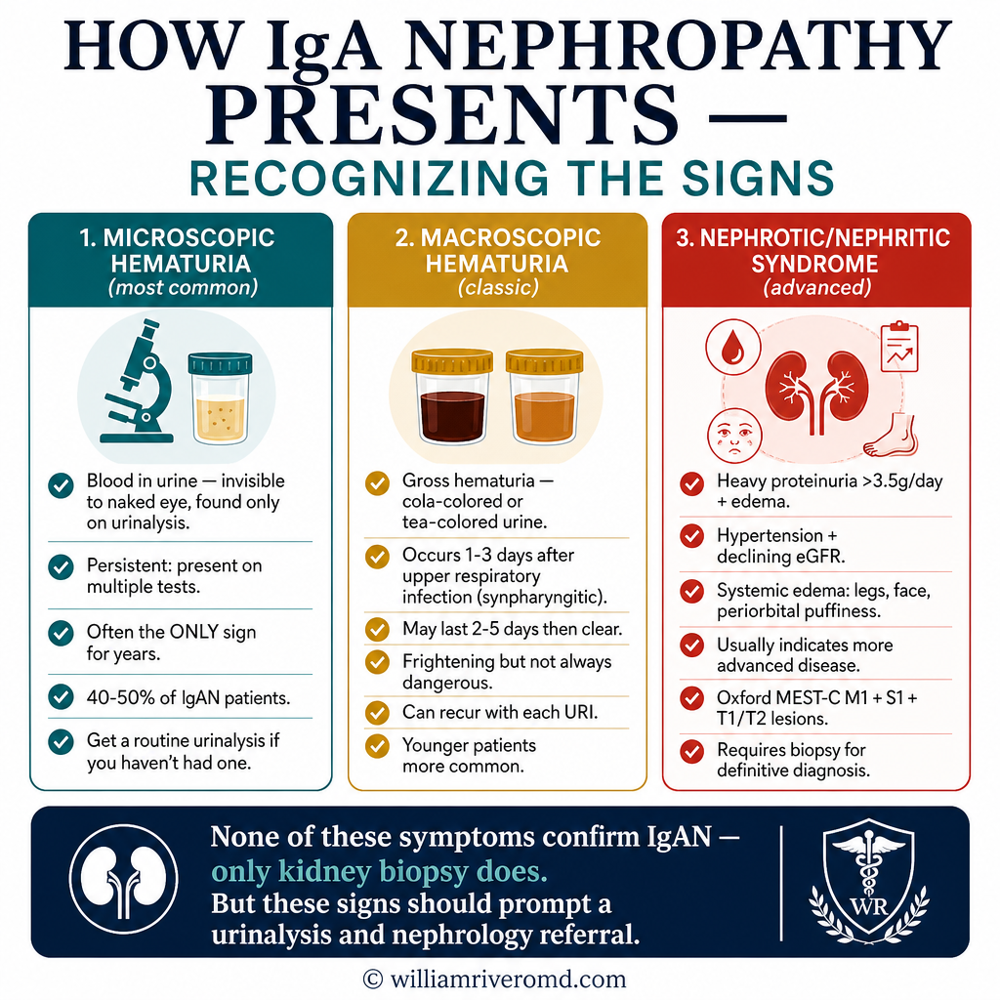
This is the most important thing to understand about IgAN: most people have no obvious symptoms for years. The disease is silent while it progresses. By the time symptoms appear, significant kidney damage may already have occurred. This is why a simple urinalysis — a urine test — is so powerful as a screening tool. Ito ang pinaka-importanteng bagay na dapat maunawaan tungkol sa IgAN: karamihan sa mga tao ay walang malinaw na sintomas sa loob ng maraming taon. Tahimik ang sakit habang umuusad ito. Sa oras na lumabas ang mga sintomas, maaaring malaking pinsala na ang naranasan ng bato. Kaya naman ang simpleng urinalysis — uri test — ay napaka-epektibong screening tool. Kini ang labing importante nga kinahanglan masabtan bahin sa IgAN: kadaghanan sa mga tawo walay klaro nga sintomas sa sulod sa daghan kaayo nga mga tuig. Hilom ang sakit samtang nagalambo kini. Sa panahon nga motungha ang mga sintomas, posibleng dakong kadaot na ang nahitabo sa kidney. Mao kana nga ang simpleng urinalysis — urine test — labing epektibong screening tool. Iti ing pinaka-importanteng bagay a dapat maunawaan tungkol sa IgAN: karinan sa deng tao ala malinaw a sintomas sa loob ning maraming taon. Tahimik ing sakit habang umuusad ito. Sa oras na lumabas deng sintomas, maaaring malaking pinsala na ing naranasan ning batu. Kaya naman ing simpleng urinalysis — urine test — napaka-epektibong screening tool.
⚠ See a doctor urgently if you notice any of thesePumunta agad sa doktor kapag napansin mo itoMoadto dayon sa doktor kung mamatikdan nimo kiniPumunta agad sa doktor nung mapansin mu iti
- Tea-colored, brown, or frankly red urine — especially after a cold or sore throatMadilaw-dilaw, kayumanggi, o pulang ihi — lalo na pagkatapos ng sipon o namamagang lalamunanKape-kafe, brown, o pula nga ihi — labi na human sa sipon o namamaga nga tutunlanMadilaw, brown, o pulang ihi — lalu na pagkatapos ning sipon o namamagang lalamunan
- Foamy or frothy urine (protein leaking from kidneys)Malabo o mabula ang ihi (protina na tumatawid mula sa bato)Mabula o magulo ang ihi (protina nga nagtulo gikan sa kidney)Mabula o malabo ing ihi (protina a tumatawid mula sa batu)
- Swelling of the ankles, legs, or face — especially in the morningPamamaga ng bukong-bukong, binti, o mukha — lalo na sa umagaPamamaga sa bukobuko, bitiis, o nawong — labi na sa buntagPamamaga ning bukung-bukung, binti, o mukha — lalu na sa umaga
- High blood pressure in someone under 40 with no other explanationMataas na presyon sa isang taong wala pang 40 taon nang walang ibang dahilanTaas nga presyur sa usa ka tawo nga ubos sa 40 nga walay laing rasonMataas a presyon sa metung a taung bata pa sa 40 nang ala ibang dahilan
- Family member already diagnosed with IgAN, Alport syndrome, or polycystic kidney diseaseMiyembro ng pamilya na na-diagnose ng IgAN, Alport syndrome, o polycystic kidney diseaseMiyembro sa pamilya nga na-diagnose og IgAN, Alport syndrome, o polycystic kidney diseaseMiyembro ning pamilya a na-diagnose ning IgAN, Alport syndrome, o polycystic kidney disease
How IgAN Is Diagnosed — What to Expect Paano Nadi-diagnose ang IgAN — Ano ang Inaasahan Unsaon Pag-diagnose sa IgAN — Unsa ang Ipaabut Panung Nadi-diagnose ing IgAN — Nano ing Inaasahan
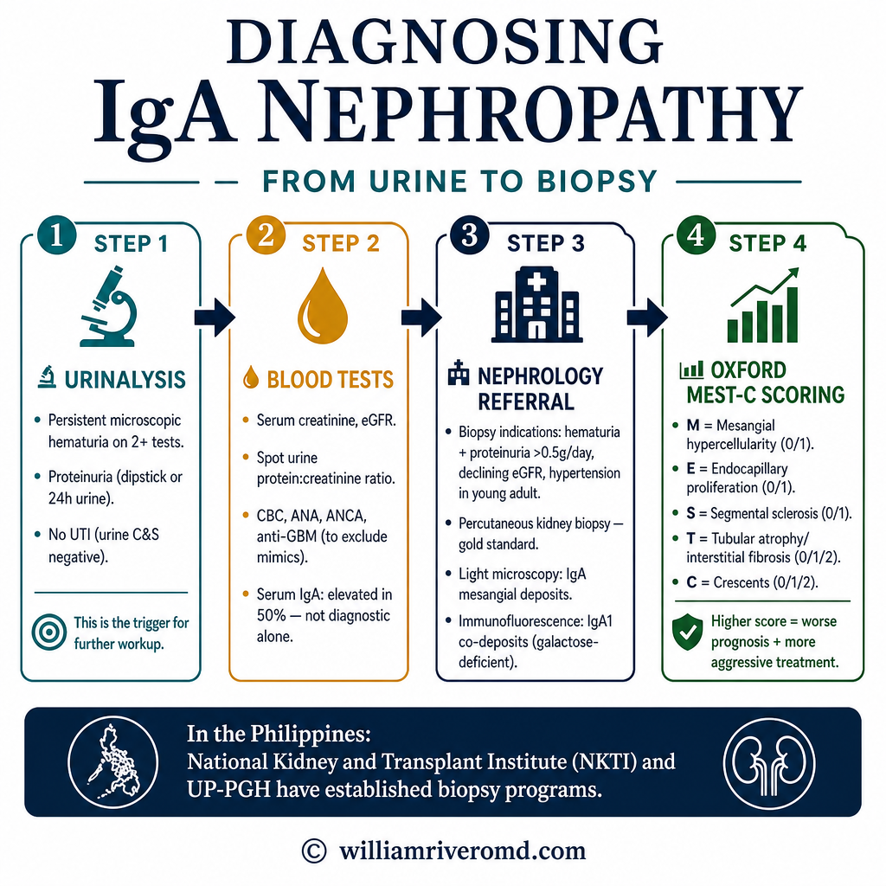
Urinalysis — the first and most important stepUrinalysis — ang una at pinaka-importanteng hakbangUrinalysis — ang una ug labing importanteng lakangUrinalysis — ing una at pinaka-importanteng hakbang
A simple urine dipstick test or microscopy can detect blood (hematuria) and protein (proteinuria) — the two hallmarks of IgAN. This test costs less than ₱200 at most clinics and laboratories. If abnormal, your doctor will order further tests. If you have never had a urinalysis done, ask for one at your next doctor visit — regardless of age. Ang simpleng urine dipstick test o microscopy ay makaka-detect ng dugo (hematuria) at protina (proteinuria) — ang dalawang pangunahing tanda ng IgAN. Ang test na ito ay nagkakahalaga ng wala pang ₱200 sa karamihang klinika at laboratoryo. Kung abnormal, mag-o-order ang iyong doktor ng karagdagang tests. Kung hindi ka pa nagpa-urinalysis, humingi nito sa susunod na pagbisita sa doktor. Ang simpleng urine dipstick test o microscopy makadetekta sa dugo (hematuria) ug protina (proteinuria) — ang duha ka pangunahing timailhan sa IgAN. Ang test nga kini nagkantidad og wala pa ₱200 sa kadaghanan nga klinika ug laboratoryo. Kung abnormal, mag-order ang imong doktor og dugang mga test. Kung wala ka pa nagpa-urinalysis, pangayo niana sa sunod nga pagbisita sa doktor. Ing simpleng urine dipstick test o microscopy makaka-detect ning daya (hematuria) at protina (proteinuria) — ing aduang pangunahing tanda ning IgAN. Iting test nagkakahalaga ning wala pang ₱200 sa karinan klinika at laboratoryo. Kung abnormal, mag-o-order ing doktor mu ning karagdagang tests. Kung ali ka pa nagpa-urinalysis, humingi nito sa susunod a pagbisita sa doktor.
Blood tests — checking kidney functionBlood tests — pagsuri ng kidney functionBlood tests — pagsusi sa kidney functionBlood tests — pagsuri ning kidney function
A serum creatinine and eGFR (estimated glomerular filtration rate) shows how well your kidneys are filtering. A 24-hour urine collection or spot urine protein:creatinine ratio (UPCR) measures how much protein is leaking — this number is critical for both diagnosis and treatment decisions. Target for treatment: UPCR <0.5 g/g (KDIGO 2025). Ang serum creatinine at eGFR ay nagpapakita kung gaano kahusay ang pag-filter ng bato. Ang 24-oras na urine collection o spot urine protein:creatinine ratio (UPCR) ay sumusukat kung gaano karaming protina ang tumatawid — kritikal ang numerong ito para sa diagnosis at desisyon sa paggamot. Target sa paggamot: UPCR <0.5 g/g (KDIGO 2025). Ang serum creatinine ug eGFR nagpakita kung unsa kahusay ang pag-filter sa kidney. Ang 24-oras nga urine collection o spot urine protein:creatinine ratio (UPCR) nagsukod kung pila ka protina ang nagtulo — kritikal kining numero para sa diagnosis ug desisyon sa pagtambal. Target sa pagtambal: UPCR <0.5 g/g (KDIGO 2025). Ing serum creatinine at eGFR nagpapakita kung gaanu kahusay ing pag-filter ning batu. Ing 24-oras a urine collection o spot urine protein:creatinine ratio (UPCR) sumusukat kung gaanu karaming protina ing tumatawid — kritikal iting numero para sa diagnosis at desisyon sa paggamot. Target sa paggamot: UPCR <0.5 g/g (KDIGO 2025).
Kidney biopsy — the only definitive testKidney biopsy — ang tanging tiyak na testKidney biopsy — ang bugtong tiyak nga testKidney biopsy — ing tanging tiyak a test
IgAN can only be confirmed by a kidney biopsy — a procedure where a needle takes a tiny tissue sample from the kidney (done under local anaesthesia, usually takes 30 minutes, recovery 4–6 hours). The sample is examined under a microscope using special stains that reveal IgA deposits. This sounds scary but is a safe and routine procedure in experienced hands. KDIGO 2025 recommends biopsy when UPCR ≥0.5 g/g and IgAN is suspected. If your doctor says you need a biopsy, it means they are taking your kidney health seriously. Ang IgAN ay makukumpirma lamang sa pamamagitan ng kidney biopsy — isang pamamaraan kung saan ang isang karayom ay kumukuha ng maliit na sample ng tissue mula sa bato (ginagawa sa ilalim ng local anaesthesia, karaniwang 30 minuto, recovery 4–6 oras). Ang sample ay sinusuri sa ilalim ng microscope gamit ang mga espesyal na stain na nagpapakita ng mga IgA deposits. Mukhang nakakatakot ito ngunit ligtas at routine na pamamaraan sa mga may karanasan. Kung sinabi ng iyong doktor na kailangan mo ng biopsy, nangangahulugang seryosong iniingatan ng iyong doktor ang iyong kidney health. Ang IgAN makumpirma lamang pinaagi sa kidney biopsy — usa ka pamaagi diin ang usa ka dagom nagkuha og gamay nga sample sa tissue gikan sa kidney (gihimo ubos sa local anaesthesia, kasagaran 30 minuto, recovery 4–6 oras). Ang sample ginasusi ubos sa microscope gamit ang espesyal nga mga stain nga nagpakita sa mga IgA deposits. Murag nakahadlok kini apan luwas ug routine nga pamaagi sa mga may kasinatian. Kung giingnan sa imong doktor nga kinahanglan ka og biopsy, nagpasabut nga seryosong giatiman sa imong doktor ang imong kidney health. Ing IgAN makukumpirma lamang sa pamamagitan ning kidney biopsy — metung a pamamaraan kung ninu ing metung a karayom kumukuha ning maliit a sample ning tissue mula sa batu (ginagawa sa ilalim ning local anaesthesia, karaniwang 30 minuto, recovery 4–6 oras). Ing sample sinusuri sa ilalim ning microscope gamit deng espesyal a stain a nagpapakita da ring IgA deposits. Mukhang nakakatakot iti pero ligtas at routine a pamamaraan sa deng may karanasan. Kung sinabi ning doktor mu a kailangan mong biopsy, nangangahulugang seryosong iniingatan ning doktor mu ing kidney health mu.
Questions to ask your doctor at the next visitMga tanong para itanong sa susunod na pagbisita sa doktorMga pangutana para itanong sa sunod nga pagbisita sa doktorDeng tanong para itanong sa susunod a pagbisita sa doktor
- "Can I have a urinalysis done today?""Puwede bang magpa-urinalysis ngayon?""Mahimo ba akong magpa-urinalysis karon?""Puwede bang magpa-urinalysis ngeni?"
- "What is my creatinine and eGFR?""Ano ang aking creatinine at eGFR?""Unsa ang akong creatinine ug eGFR?""Nano ing creatinine at eGFR ku?"
- "Should I see a nephrologist (kidney specialist)?""Kailangan ba akong magpatingin sa nephrologist (espesyalista sa bato)?""Kinahanglan ba akong motan-aw sa nephrologist (espesyalista sa kidney)?""Kailangan ko bang magpatingin sa nephrologist (espesyalista ning batu)?"
- "Do my siblings need kidney tests too?""Kailangan din bang magpa-kidney test ang mga kapatid ko?""Kinahanglan ba usab og kidney test ang akong mga igsoon?""Kailangan naman bang magpa-kidney test deng mga kapatad ku?"
Will My Kidneys Get Worse? Understanding Your Risk Lalala Pa Ba ang Aking mga Bato? Pag-unawa sa Iyong Panganib Maggrabe Pa Ba ang Akong mga Kidney? Pagsabut sa Imong Peligro Lalala Pa Ba Deng Batu Ko? Pag-intindi ning Peligro Mu
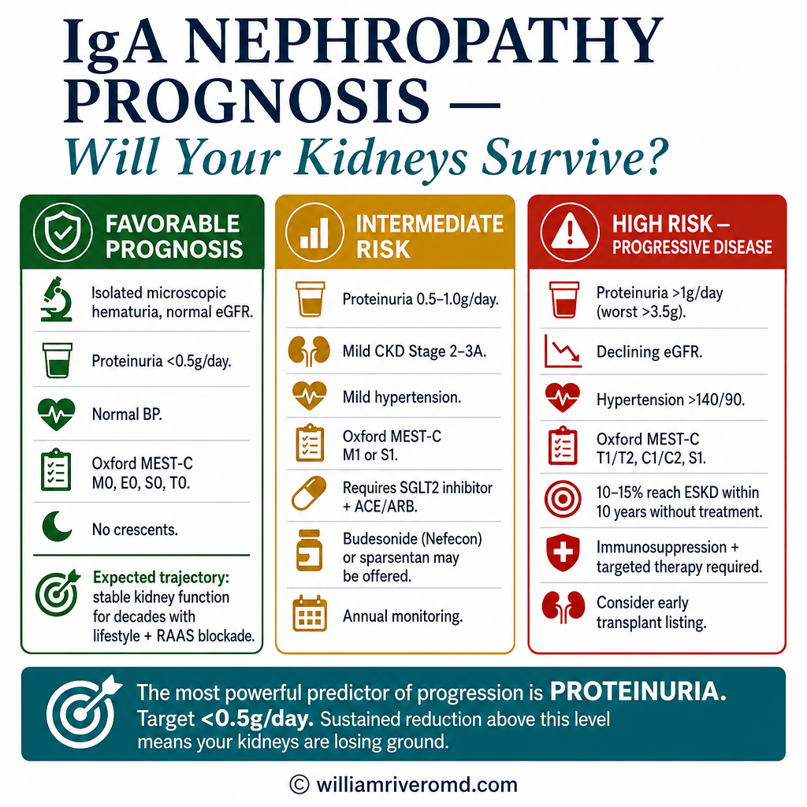
Not everyone with IgAN will reach kidney failure. Some patients stay stable for decades. But globally, 20–40% of patients progress to end-stage kidney disease within 20 years — and for Filipino patients, the risk may be higher because most are diagnosed late (already Stage 3) when significant damage has already accumulated. The single most important predictor of progression is proteinuria — how much protein is leaking in your urine. The goal of treatment is to drive that number down as far as possible. Hindi lahat ng may IgAN ay maaabot ang kidney failure. May mga pasyenteng nananatiling stable sa loob ng maraming dekada. Pero globally, 20–40% ng mga pasyente ay umabot sa end-stage kidney disease sa loob ng 20 taon — at para sa mga pasyenteng Pilipino, maaaring mas mataas ang panganib dahil karamihan ay late ang diagnosis (Stage 3 na) kapag malaking pinsala na ang naipong naranasan. Ang pinaka-importanteng predictor ng progression ay proteinuria — kung gaano karaming protina ang tumatagos sa ihi mo. Ang layunin ng paggamot ay ibaba ang bilang na iyon nang husto. Dili tanan nga adunay IgAN maabot og kidney failure. Adunay mga pasyente nga nagpabilin nga stable sa sulod sa daghan kaayo nga mga dekada. Apan globally, 20–40% sa mga pasyente moabot sa end-stage kidney disease sulod sa 20 tuig — ug para sa mga pasyenteng Pilipino, mahimong mas taas ang peligro tungod kasagaran late ang diagnosis (Stage 3 na) kung dagko na ang kadaot nga natigom. Ang labing importante nga predictor sa pag-uswag mao ang proteinuria — kung pila ka protina ang nagtulo sa imong ihi. Ang tumong sa pagtambal pagpaubos nianang numero sa labing dako. Ali lahat ning maki IgAN maaabot ing kidney failure. Maki deng pasyente a nananatiling stable sa loob ning maraming dekada. Pero globally, 20–40% da ring mga pasyente umabot sa end-stage kidney disease sa loob ning 20 taon — at para king deng pasyenteng Pilipino, maaaring mas mataas ing peligro dahil karinan late ing diagnosis (Stage 3 na) nung malaking pinsala na ing naipong naranasan. Ing pinaka-importanteng predictor ning progression ing proteinuria — kung gaanu karaming protina ing tumatagos sa ihi mu. Ing layunin ning paggamot ibaba iting bilang nang husto.
The key message: early treatment changes everythingAng pangunahing mensahe: binabago ng maagang paggamot ang lahatAng pangunahing mensahe: ang sayo nga pagtambal nagbag-o sa tananIng pangunahing mensahe: binabago ning maagang paggamot ing lahat
With appropriate treatment — blood pressure control, maximum RAS blockade, SGLT2 inhibitors, and now targeted therapies — the rate of eGFR decline can be cut in half or more. Patients diagnosed at G1–G2 with proteinuria <0.5 g/day have excellent long-term outcomes. The tragedy in the Philippines is not that the disease is untreatable — it is that most people are diagnosed too late. Sa tamang paggamot — blood pressure control, maximum RAS blockade, SGLT2 inhibitors, at ngayon ay mga targeted na therapy — ang rate ng pagbaba ng eGFR ay maaaring mabawasan ng kalahati o higit pa. Ang mga pasyenteng na-diagnose sa G1–G2 na may proteinuria <0.5 g/araw ay may magandang pangmatagalang kinalabasan. Ang trahedya sa Pilipinas ay hindi na hindi maaring gamutin ang sakit — kundi karamihan ay late na ang diagnosis. Sa husto nga pagtambal — blood pressure control, maximum RAS blockade, SGLT2 inhibitors, ug karon targeted nga mga therapy — ang rate sa paghulog sa eGFR mahimong mapusgay sa katunga o labaw pa. Ang mga pasyente nga na-diagnose sa G1–G2 nga adunay proteinuria <0.5 g/adlaw adunay maayong pangdugay nga mga resulta. Ang trahedya sa Pilipinas dili nga dili matambal ang sakit — kondili kadaghanan late na ang diagnosis. Sa tamang paggamot — blood pressure control, maximum RAS blockade, SGLT2 inhibitors, at ngeni deng targeted a therapy — ing rate ning pagbaba ning eGFR maaaring mabawasan ning kalahati o higit pa. Deng pasyenteng na-diagnose sa G1–G2 a maki proteinuria <0.5 g/aldo maki magandang pangmatagalang kinalabasan. Ing trahedya king Pilipinas ali na ali maaring gamutin ing sakit — kundi karinan late na ing diagnosis.
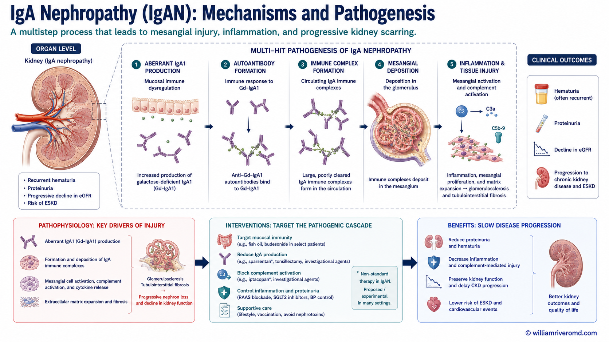
Treatment — What Is Available in the Philippines Right Now Paggamot — Ano ang Available sa Pilipinas Ngayon Pagtambal — Unsa ang Available sa Pilipinas Karon Paggamot — Nano ing Available sa Pilipinas Ngeni
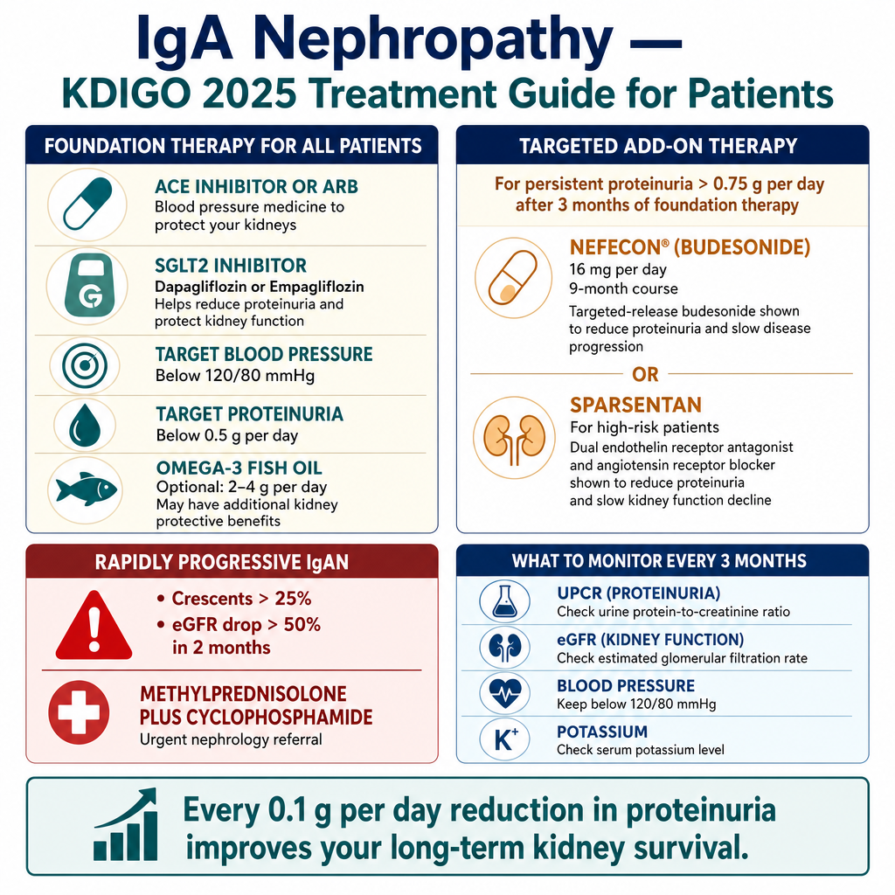
Blood Pressure Medicines (ACEi / ARB)Gamot sa Presyon (ACEi / ARB)Tambal sa Presyur (ACEi / ARB)Gamut sa Presyon (ACEi / ARB)
Available locally. First-line. Medicines like enalapril, losartan, irbesartan, telmisartan reduce pressure inside the kidney filters and dramatically lower protein leakage. Maximum tolerated dose is used. This is the backbone of IgAN treatment — cheap, effective, and available at every pharmacy. Available locally. Una sa lahat. Ang mga gamot tulad ng enalapril, losartan, irbesartan, telmisartan ay nagpapababa ng presyon sa loob ng mga kidney filter at malaki ang nabawas na pagtagas ng protina. Ginagamit ang pinaka-mataas na tolerated na dosis. Ito ang pundasyon ng paggamot ng IgAN — mura, epektibo, at available sa bawat parmasya. Available locally. Una sa tanan. Ang mga tambal sama sa enalapril, losartan, irbesartan, telmisartan nagpababa sa presyur sulod sa mga kidney filter ug dako ang nabawas nga pagtulo sa protina. Gigamit ang labing taas nga tolerated nga dosis. Kini ang pundasyon sa pagtambal sa IgAN — barato, epektibo, ug available sa matag parmasya. Available locally. Una sa lahat. Deng gamut tulad ning enalapril, losartan, irbesartan, telmisartan nagpapababa ning presyon sa loob da ring kidney filter at malaki ing nabawas a pagtagas ning protina. Ginagamit ing pinaka-mataas a tolerated a dosis. Iti ing pundasyon ning paggamot ning IgAN — mura, epektibo, at available sa bawat parmasya.
SGLT2 Inhibitors (Dapagliflozin / Empagliflozin)SGLT2 InhibitorsSGLT2 InhibitorsSGLT2 Inhibitors
Available locally. Now recommended for all IgAN patients. KDIGO 2025 recommends these diabetes medicines (Catania/Rhea brands of dapagliflozin; empagliflozin) for all IgAN patients with eGFR ≥20 — regardless of diabetes status. They protect the kidney directly, reduce proteinuria, and have a strong safety record. Ask your doctor about these specifically. Available locally. Inirerekomenda na ngayon para sa lahat ng IgAN. Inirerekomenda ng KDIGO 2025 ang mga gamot na ito (Catania/Rhea brands ng dapagliflozin; empagliflozin) para sa lahat ng pasyenteng IgAN na may eGFR ≥20 — kahit walang diabetes. Direktang nagpoprotekta sa bato, nagpapababa ng proteinuria, at ligtas. Tanungin ang iyong doktor tungkol dito. Available locally. Girekomenda na karon para sa tanan nga IgAN. Girekomenda sa KDIGO 2025 kining mga tambal (Catania/Rhea brands sa dapagliflozin; empagliflozin) para sa tanan nga pasyente sa IgAN nga adunay eGFR ≥20 — bisan walay diabetes. Direktang nagpanalipod sa kidney, nagpababa sa proteinuria, ug luwas. Pangutana ang imong doktor bahin niini. Available locally. Inirerekomenda na ngeni para sa lahat ning IgAN. Inirerekomenda ning KDIGO 2025 deting mga gamut (Catania/Rhea brands ning dapagliflozin; empagliflozin) para king lahat ning pasyenteng IgAN a maki eGFR ≥20 — kahit ala diabetes. Direktang nagpoprotekta sa batu, nagpapababa ning proteinuria, at ligtas. Tanungin ing doktor mu tungkol dito.
Steroids (Systemic Corticosteroids)Steroids (Systemic Corticosteroids)Steroids (Systemic Corticosteroids)Steroids (Systemic Corticosteroids)
Available locally. For high-risk patients only. Prednisolone/prednisone can suppress the immune response driving IgAN in selected high-risk patients (persistent proteinuria >1 g/day despite maximum supportive therapy, active lesions on biopsy). Significant side effects exist — weight gain, blood sugar elevation, bone loss. Used per the modified TESTING protocol under nephrologist supervision. Available locally. Para lamang sa mga high-risk na pasyente. Ang prednisolone/prednisone ay maaaring sugpuin ang immune response na nagdudulot ng IgAN sa mga piling high-risk na pasyente. Mabigat ang mga side effect — pagtaas ng timbang, pagataas ng asukal, pagkawala ng bone density. Ginagamit ayon sa modified TESTING protocol sa ilalim ng gabay ng nephrologist. Available locally. Para lamang sa mga high-risk nga pasyente. Ang prednisolone/prednisone makapugong sa immune response nga naghimo sa IgAN sa piling high-risk nga mga pasyente. Grabe ang mga side effect — pagtaas sa timbang, pagtaas sa asukal, pagkawala sa bone density. Gigamit base sa modified TESTING protocol ubos sa giya sa nephrologist. Available locally. Para lamang king deng high-risk a pasyente. Ing prednisolone/prednisone maaaring sugpuin ing immune response a nagdudulot ning IgAN king piling high-risk a mga pasyente. Mabigat deng side effect — pagtaas ning timbang, pagataas ning asukal, pagkawala ning bone density. Ginagamit ayon sa modified TESTING protocol sa ilalim ning gabay ning nephrologist.
New targeted therapies — coming to Asia, not yet hereBagong targeted therapies — paparating na sa Asia, hindi pa ditoBag-ong targeted nga mga therapy — maabot na sa Asia, wala pa diriBagong targeted therapies — paparating na sa Asia, ali pa dito
Two medications have now received full US FDA approval specifically for IgAN — Tarpeyo (budesonide delayed-release) and Filspari (sparsentan). Both are approved in Europe, China, South Korea, Singapore, and Taiwan. Japan's NDA for sparsentan is expected in 2026. The Philippines is in the licensed territory for sparsentan (Renalys/Chugai) but no local registration has been filed yet. Patients who need these drugs urgently can ask their nephrologist about the Special Access Route (SAR) — the Philippine FDA's compassionate use pathway for unregistered international medications. Dalawang gamot ang nakatanggap na ng full US FDA approval para sa IgAN — Tarpeyo (budesonide delayed-release) at Filspari (sparsentan). Pareho ay approved na sa Europa, China, South Korea, Singapore, at Taiwan. Ang NDA ng Japan para sa sparsentan ay inaasahan sa 2026. Ang Pilipinas ay nasa licensed territory para sa sparsentan pero hindi pa na-file ang lokal na registration. Ang mga pasyenteng kailangan ng mga gamot na ito ay maaaring magtanong sa kanilang nephrologist tungkol sa Special Access Route (SAR). Duha ka tambal ang nakadawat na og full US FDA approval para sa IgAN — Tarpeyo (budesonide delayed-release) ug Filspari (sparsentan). Pareho approved na sa Europe, China, South Korea, Singapore, ug Taiwan. Ang NDA sa Japan para sa sparsentan gipaabut sa 2026. Ang Pilipinas anaa sa licensed territory para sa sparsentan apan wala pa na-file ang lokal nga registration. Ang mga pasyente nga nagkinahanglan niining mga tambal mahimong mangutana sa ilang nephrologist bahin sa Special Access Route (SAR). Aduang gamut ing nakatanggap na ning full US FDA approval para king IgAN — Tarpeyo (budesonide delayed-release) at Filspari (sparsentan). Pareho approved na sa Europa, China, South Korea, Singapore, at Taiwan. Ing NDA ning Japan para king sparsentan inaasahan sa 2026. Ing Pilipinas nasa licensed territory para king sparsentan pero ali pa na-file ing lokal a registration. Deng pasyente a kailangan ning deting mga gamut maaaring magtanong sa nephrologist nila tungkol king Special Access Route (SAR).
What You Can Do Right Now Ano ang Magagawa Mo Ngayon Unsa ang Mahimo Nimo Karon Nano ing Magagawa Mo Ngeni
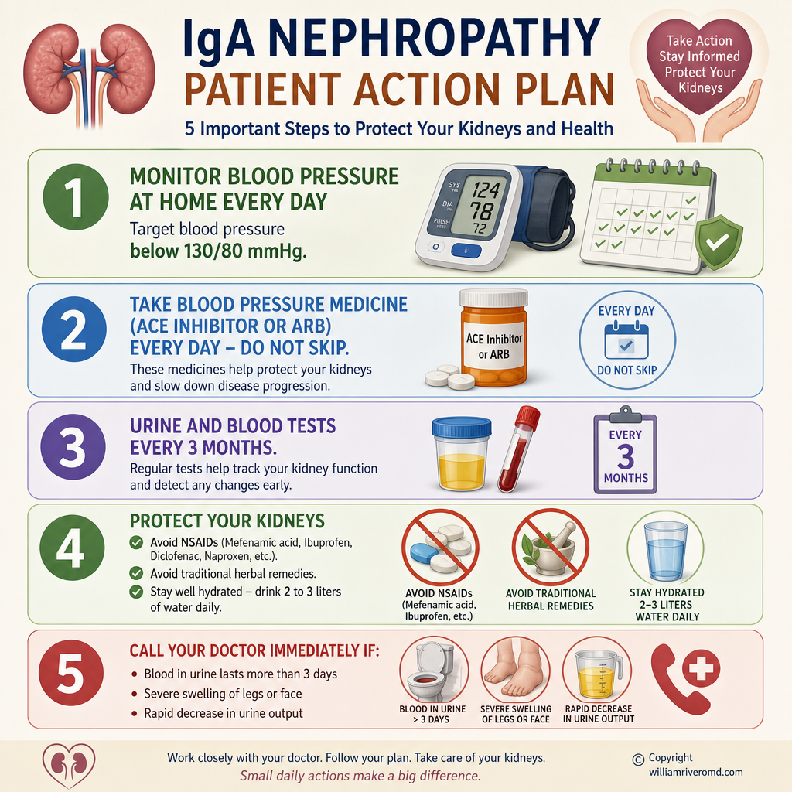
Your IgAN action checklistChecklist mo para sa IgANChecklist nimo para sa IgANChecklist mu para king IgAN
- Request a urinalysis at your next doctor visit — even if you feel fine. Blood in urine is invisible. This one test can catch IgAN years before symptoms appear. Humingi ng urinalysis sa susunod mong pagbisita sa doktor — kahit okay ka. Hindi nakikita ng mata ang dugo sa ihi. Ito lang na test ay makaka-detect ng IgAN maraming taon bago pa lumabas ang sintomas. Pangayo og urinalysis sa imong sunod nga pagbisita sa doktor — bisan okay ka. Dili makita sa mata ang dugo sa ihi. Kining usa ka test makadetekta sa IgAN daghang tuig sa wala pa motungha ang mga sintomas. Humingi ning urinalysis sa susunod mong pagbisita sa doktor — kahit okay ka. Ali makita ning mata ing daya sa ihi. Iti lang a test makaka-detect ning IgAN maraming taon bago pa lumabas deng sintomas.
- Know your creatinine, eGFR, and UPCR numbers. Write them down. Track them at every visit. Ask your doctor what they mean and whether they are getting better or worse. Alamin ang iyong creatinine, eGFR, at UPCR numbers. Isulat ito. Subaybayan sa bawat pagbisita. Tanungin ang iyong doktor kung ano ang ibig sabihin nito at kung bumababa o tumatanda. Hibal-i ang imong creatinine, eGFR, ug UPCR numbers. Isulat kini. Subayan sa matag pagbisita. Pangutana ang imong doktor kung unsa ang kahulogan nini ug kung nagpababa ba o nagpalala. Alamin ing creatinine, eGFR, at UPCR numbers mu. Isulat ito. Bantayan sa bawat pagbisita. Tanungin ing doktor mu kung nano ing kabaldugan nito at kung bumababa o tumatanda.
- If you are diagnosed with IgAN, ask your doctor about starting an SGLT2 inhibitor — dapagliflozin (Catania or Rhea brand) or empagliflozin. KDIGO 2025 recommends this for all IgAN patients with eGFR ≥20, regardless of diabetes. Kung na-diagnose ka ng IgAN, tanungin ang iyong doktor tungkol sa pagsisimula ng SGLT2 inhibitor — dapagliflozin (Catania o Rhea brand) o empagliflozin. Inirerekomenda ito ng KDIGO 2025 para sa lahat ng IgAN na may eGFR ≥20, kahit walang diabetes. Kung na-diagnose ka og IgAN, pangutana ang imong doktor bahin sa pagsugod sa SGLT2 inhibitor — dapagliflozin (Catania o Rhea brand) o empagliflozin. Girekomenda kini sa KDIGO 2025 para sa tanan nga IgAN nga adunay eGFR ≥20, bisan walay diabetes. Kung na-diagnose ka ning IgAN, tanungin ing doktor mu tungkol king pagsisimula ning SGLT2 inhibitor — dapagliflozin (Catania o Rhea brand) o empagliflozin. Inirerekomenda iti ning KDIGO 2025 para king lahat ning IgAN a maki eGFR ≥20, kahit ala diabetes.
- Get a referral to a nephrologist (kidney specialist) if you have blood or protein in your urine, eGFR below 60, or unexplained high blood pressure under age 40. Primary care physicians can refer you to NKTI, the Philippine General Hospital, or a private nephrologist. Humingi ng referral sa nephrologist (espesyalista sa bato) kung may dugo o protina sa ihi, eGFR na mas mababa sa 60, o hindi maipaliwanag na mataas na presyon bago mag-40. Ang mga primary care physician ay makakareferral sa NKTI, PGH, o private nephrologist. Pangayo og referral sa nephrologist (espesyalista sa kidney) kung adunay dugo o protina sa ihi, eGFR ubos sa 60, o dili mapojngklaro nga taas nga presyur sa wala pa mag-40. Ang mga primary care physician makareferral sa NKTI, PGH, o private nephrologist. Humingi ning referral sa nephrologist (espesyalista ning batu) kung maki daya o protina sa ihi, eGFR mas ababa sa 60, o ali maipaliwanag a mataas a presyon bago mag-40. Deng primary care physician makakareferral sa NKTI, PGH, o private nephrologist.
- Tell your siblings and first-degree relatives that you have IgAN. Some forms are hereditary. They may need a simple urinalysis and eGFR check. One conversation can save a kidney. Sabihin sa iyong mga kapatid at malapit na kamag-anak na mayroon kang IgAN. Ang ilang anyo ay namamana. Maaaring kailangan nila ng simpleng urinalysis at eGFR check. Isang usapan ang maaaring makapagligtas ng bato. Suginlan ang imong mga igsoon ug malapit nga mga kadugo nga adunay kang IgAN. Ang pipila ka mga anyo gipanunod. Mahimong kinahanglan nila og simpleng urinalysis ug eGFR check. Usa ka pakig-istorya ang makakaluwas sa usa ka kidney. Sabihin sa deng kapatad mu at malapit a mga kamag-anak a maki kang IgAN. Ilang anyo namamana. Maaaring kailangan nila ning simpleng urinalysis at eGFR check. Metung a usapan ing maaaring makapagligtas ning metung a batu.
- For financial assistance with nephrology care: apply through PhilHealth (Z-benefit packages for selected GN), PCSO Medical Assistance Program, DSWD indigency certificate, and your dialysis center's social worker if on dialysis. Your nephrologist can write support letters for these applications. Para sa tulong pinansyal sa nephrology care: mag-apply sa PhilHealth (Z-benefit packages), PCSO Medical Assistance Program, DSWD indigency certificate, at sa social worker ng iyong dialysis center kung nasa dialysis ka. Ang iyong nephrologist ay makakapagsulat ng support letters para sa mga aplikasyong ito. Para sa pinansyal nga tabang sa nephrology care: mag-apply sa PhilHealth (Z-benefit packages), PCSO Medical Assistance Program, DSWD indigency certificate, ug sa social worker sa imong dialysis center kung sa dialysis ka. Ang imong nephrologist makasulat og support letters para sa kining mga aplikasyon. Para king tulong pinansyal sa nephrology care: mag-apply sa PhilHealth (Z-benefit packages), PCSO Medical Assistance Program, DSWD indigency certificate, at sa social worker ning dialysis center mu kung nasa dialysis ka. Ing nephrologist mu makakapagsulat ning support letters para king deting mga aplikasyon.
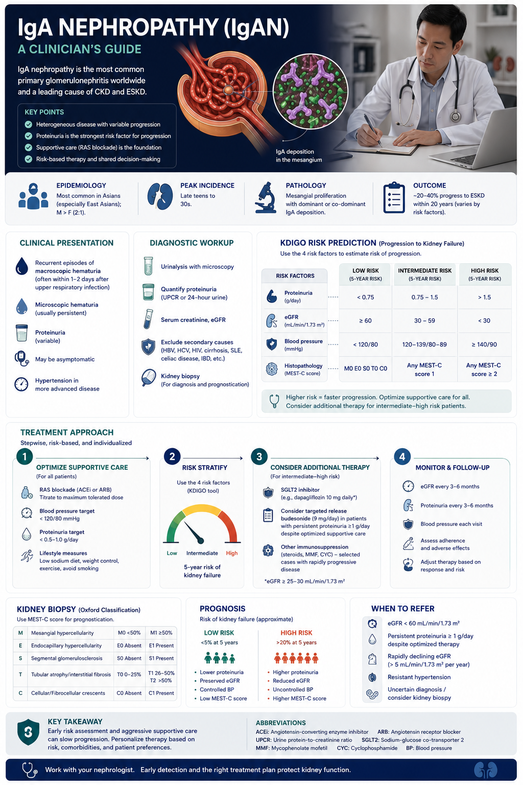
F 2:1), clinical presentation, diagnostic workup, KDIGO risk prediction table (low/intermediate/high 5-year risk), stepwise treatment approach (supportive care → risk stratify → additional therapy → monitor), kidney biopsy Oxford MEST-C classification, prognosis, and when to refer." style="width:100%;height:auto;display:block;border-radius:14px;">Epidemiology of IgAN — Philippine & Global Data
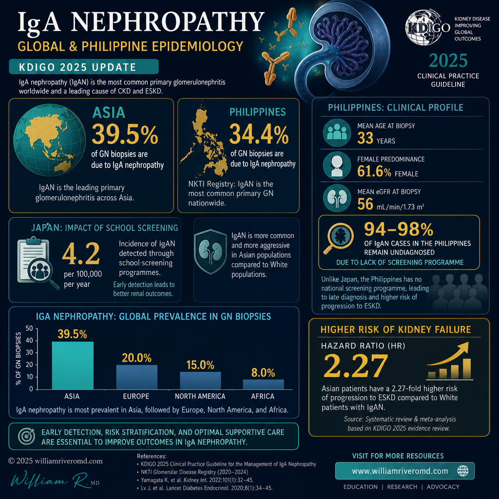
IgAN is the most common primary glomerulonephritis globally — accounting for 39.5% of GN biopsies in Asia, 22.1% in Europe, and 11.8% in North America. In the Philippines, it constitutes 34.4% of all biopsy-proven kidney disease nationally (NKTI registry). The NKTI adult cohort (2015–2019, n=151) presents at mean age 33 years, 61.6% female, mean eGFR 56 mL/min/1.73m² — already Stage 3 CKD at biopsy. Global incidence is approximately 2.5/100,000/year, highest in Japan (4.2/100,000) driven by mandatory school urinalysis. Philippine incidence is unknown but estimated 1.5–3.5/100,000/year. Estimated 94–98% of Philippine IgAN cases are undiagnosed due to absence of a national urinalysis screening program and limited biopsy access outside tertiary centers.
| Population | IgAN % of GN Biopsies | Incidence (per 100k/yr) | Mean Age at Dx | ESKD Risk (20yr) |
|---|---|---|---|---|
| Philippines (NKTI) | 34.4% | Unknown (est. 1.5–3.5) | 33 yrs (61.6% F) | Not published; eGFR 56 at biopsy suggests moderate-high |
| Japan | >40% | 4.2 (highest globally) | Late teens–30s (school screening) | ~30–40% |
| China (mainland) | 6.3–24.7% biopsy rate | Variable | 20s–30s | ~20–40% |
| South Korea | Up to 72% | Variable | 20s–30s | ~25–35% |
| Europe | 22.1% pooled | 0.34–1.93 | 20s–40s | ~20–30% |
| North America | 11.8% | 0.39–1.4 | 30s–40s | ~20–30% |
| Africa | 2.8% | 0.06 | — | Limited data |
Pathophysiology — The Four-Hit Model
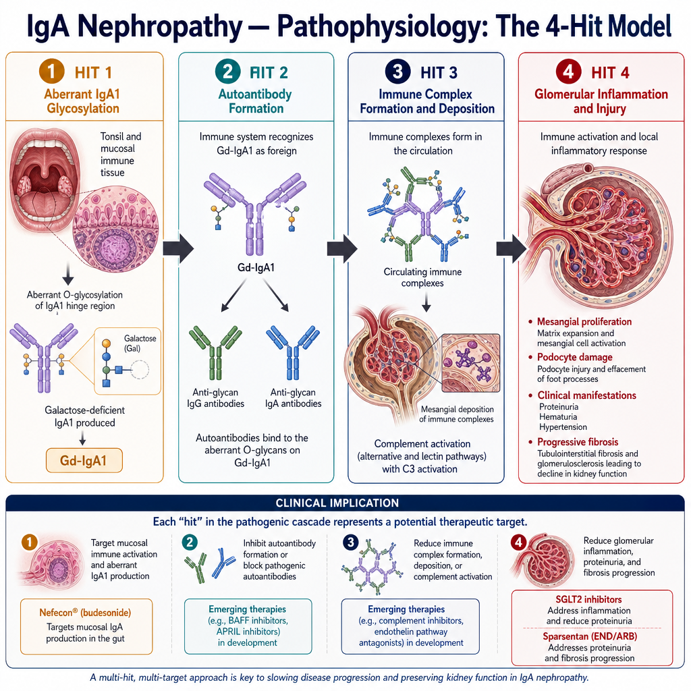
The pathogenic cascade of IgAN is well-characterized by the four-hit hypothesis (Suzuki et al., 2011), providing the mechanistic framework for all current and emerging targeted therapies:
Hit 1 — Gd-IgA1 overproduction
Dysregulated mucosal immunity (Peyer's patches, tonsillar MALT) produces galactose-deficient IgA1 (Gd-IgA1). The O-glycans of the hinge region lack galactose, creating a substrate for autoantibody recognition. This is the target of targeted-release budesonide (Tarpeyo/Nefecon) — delivered to the distal ileum to suppress mucosal IgA1 production at source.
Hit 2 — Autoantibody formation
Anti-glycan autoantibodies (IgG or IgA class) form against the exposed hinge region of Gd-IgA1. Circulating immune complexes (IgA-IgG or IgA-IgA) form. Serum Gd-IgA1 and anti-Gd-IgA1 antibody levels are candidate biomarkers. BAFF and APRIL, B-cell survival factors produced in the mucosa, drive this step — the target of sibeprenlimab (anti-APRIL) and atacicept (dual BAFF/APRIL).
Hit 3 — Mesangial deposition
Immune complexes deposit in the glomerular mesangium. Mesangial IgA deposition is found in 10–16% of asymptomatic Japanese donor kidneys, and 4–8% in European autopsy series — demonstrating latent prevalence far exceeding clinical disease. Complement C3 co-deposition marks the biologically active subset (~20% of those with IgA deposits).
Hit 4 — Glomerular injury
Mesangial immune complexes activate the alternative complement pathway (factor B → C3b → MAC) and mesangial cells, triggering cytokine release, podocyte injury, and progressive glomerulosclerosis. Iptacopan (factor B inhibitor) and atrasentan (endothelin receptor antagonist) target this step. Sparsentan acts here via dual ETA and AT1 receptor blockade — reducing intraglomerular haemodynamic injury.
Genetic susceptibility — clinically relevant
GWAS meta-analysis (Kiryluk et al.) identified 30 risk loci explaining ~11% of disease risk. Relevant loci include HLA-DR/DQ region, complement factor H, and mucosal immunity genes. Pacific Asian ancestry — including Filipino — carries higher disease burden and more severe histological presentation at biopsy compared to Europeans. Hereditary nephritis (Alport syndrome — COL4A3/4/5 variants), ADPKD (PKD1/2), and rare FSGS variants (NPHS1/2) warrant genetic counselling when clinically suspected.
Clinical Phenotypes & Differential Diagnosis
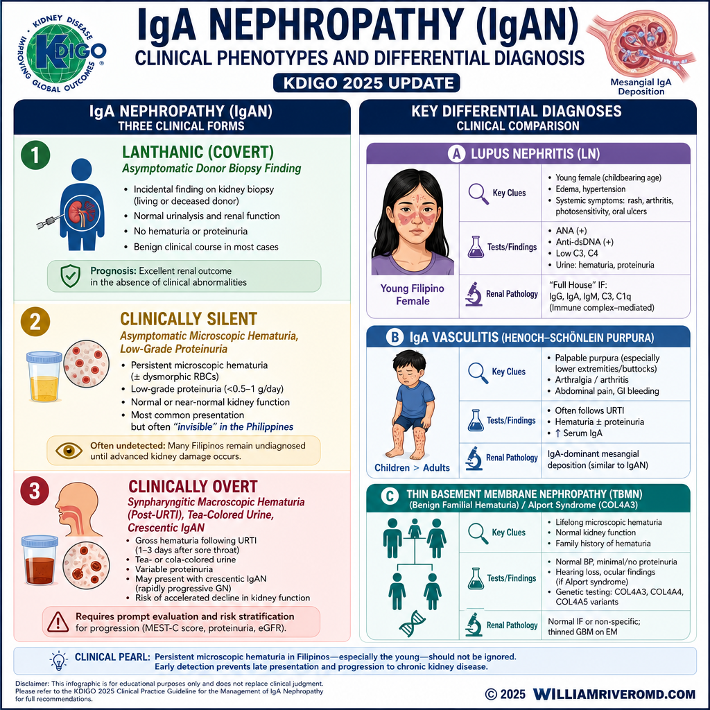
Clinical Forms
Lanthanic (Covert)
Incidental mesangial IgA deposition on zero-biopsy of asymptomatic donor — no clinical correlate. Not requiring treatment; importance is epidemiological (supports true prevalence estimates).
Clinically Silent
Asymptomatic microscopic hematuria ± low-grade proteinuria (<0.5 g/day) on routine urinalysis. Most common presentation in screening-active populations (Japan, Korea). High-risk in Philippines due to absence of school screening — this group is invisible.
Clinically Overt
Synpharyngitic/synenteric macrohematuria (tea/cola-colored urine 1–2 days post-URTI/GI infection — classic); persistent microhematuria + proteinuria; nephrotic syndrome (uncommon, suspect podocytopathy variant); AKI on hematuria (tubular obstruction by RBC casts); rapidly progressive GN (crescentic IgAN — rare, aggressive).
Differential Diagnosis
Lupus Nephritis (ISN/RPS Class III/IV)
Distinguish by ANA, anti-dsDNA, C3/C4, full house IF pattern. Critical in Filipino cohort — lupus nephritis peak age and sex profile (young female) overlaps significantly with IgAN. Both can present with mesangial IgA. ANA screen mandatory before biopsy referral in this demographic.
IgA Vasculitis (IgAV / Henoch-Schönlein Purpura)
Histologically identical renal lesions to IgAN. Distinguished by systemic features: palpable purpura (lower extremities), arthralgia, abdominal pain, GI involvement. Most common in children (<10 years). Treatment per KDIGO 2025 IgAV protocol — same agents.
Thin Basement Membrane Nephropathy (TBMN)
Benign persistent microscopic hematuria, normal eGFR and proteinuria, family history. Distinguished by electron microscopy (GBM thinning without mesangial IgA). Associated with Alport syndrome heterozygosity (COL4A3/4 variants). No treatment required — surveillance annually.
Diagnostic Workup — KDIGO 2025 Framework
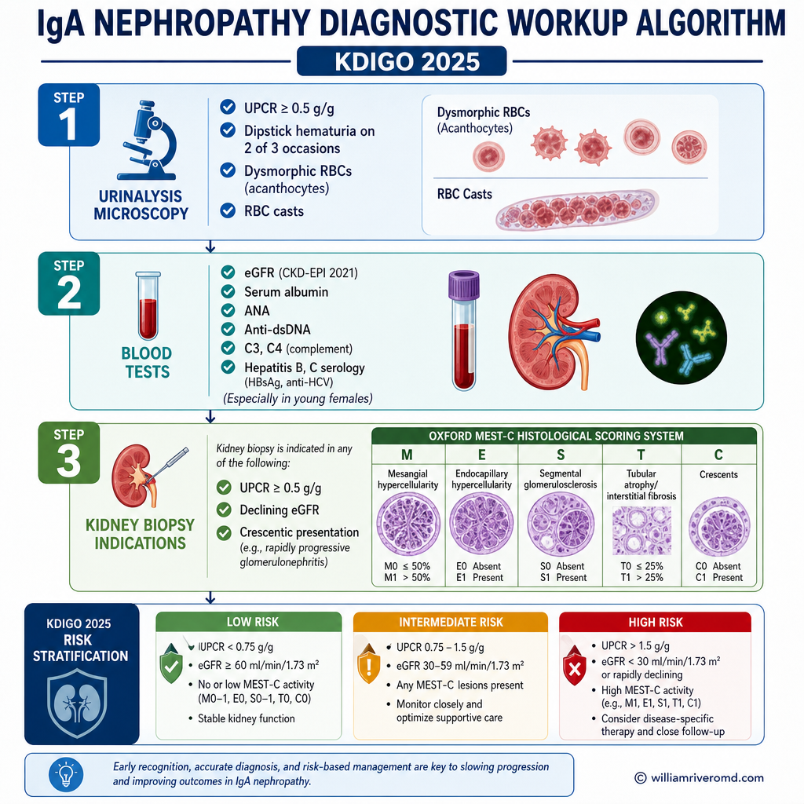
Initial screen: urinalysis + microscopy + urine ACR/PCR
Dipstick hematuria ≥1+ on ≥2 of 3 occasions (to exclude transient causes). Urine microscopy for dysmorphic RBCs (acanthocytes) and RBC casts — glomerular vs non-glomerular hematuria distinction. Spot urine protein:creatinine ratio (UPCR) — KDIGO 2025 biopsy trigger: UPCR ≥0.5 g/g (previously 1.0 g/g — this is a significant lowering). 24-hour urine protein acceptable alternative.
Blood work: eGFR, creatinine, electrolytes, CBC, lipid panel
CKD-EPI 2021 eGFR calculation (race-free formula). Serum albumin (hypoalbuminaemia suggests nephrotic component). ANA, anti-dsDNA, C3, C4 — mandatory in young females to exclude lupus nephritis before biopsy. Hepatitis B and C serology (secondary IgAN). Serum Gd-IgA1 — not yet clinically validated for diagnostic use but useful in research context.
Kidney biopsy — indication and timing (KDIGO 2025)
Indicated when UPCR ≥0.5 g/g (or proteinuria ≥0.5 g/day) with suspected IgAN in whom access to novel therapies (nefecon, sparsentan) is being considered. Biopsy is the only confirmatory diagnostic — no serum biomarker is validated. KDIGO 2025 encourages a more liberal biopsy policy than previous guidelines. Oxford MEST-C scoring (M: mesangial hypercellularity; E: endocapillary proliferation; S: segmental sclerosis; T: tubular atrophy/interstitial fibrosis; C: crescents) — each component predicts progression and guides treatment intensity.
Risk stratification: International IgAN Prediction Tool
Validated in Chinese, Japanese, European, and Filipino cohorts (NKTI validation, WCN 2024). Inputs: age, sex, eGFR, proteinuria, BP, MEST-C score, ACEi/ARB use. Predicts 5-year risk of 50% eGFR decline or ESKD. Landmark analysis at 1-year post-biopsy provides stronger prediction than at-biopsy model. Guides treatment escalation decisions.
Risk Stratification & Prognosis
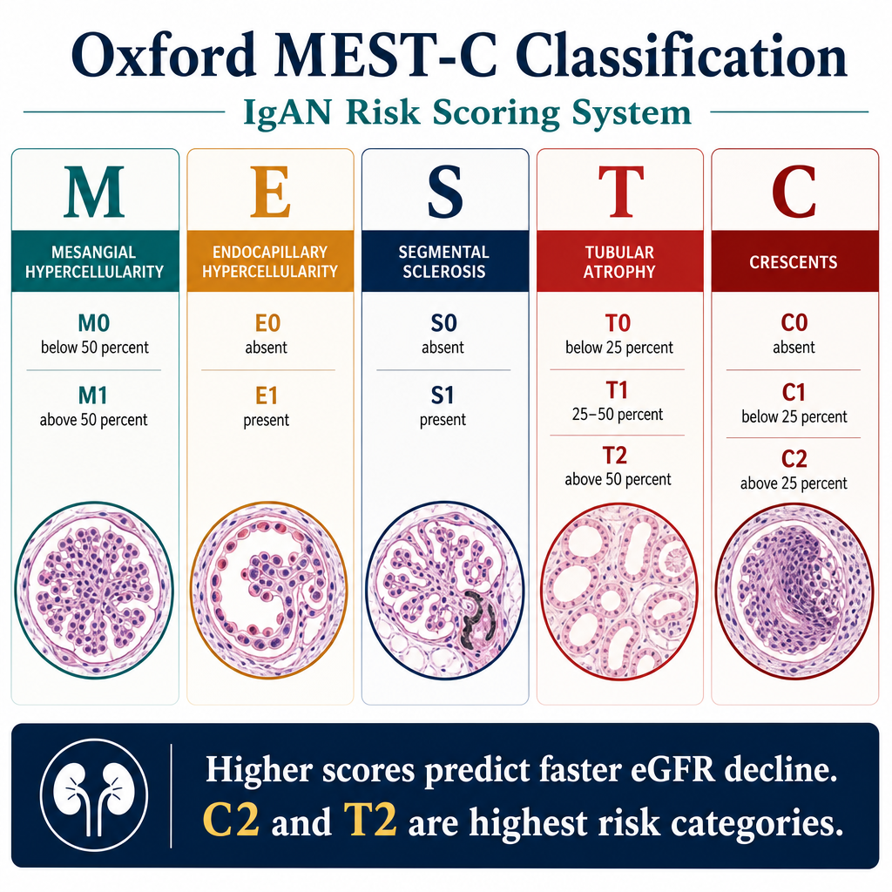
Pacific Asian patients have inherently higher progression risk
In the International IgAN Prediction Tool, Chinese ethnicity carries HR 2.27 (95% CI 1.73–2.96) and Japanese ethnicity HR 1.50 (95% CI 1.07–2.11) for 50% eGFR decline or ESKD vs Europeans. Filipino patients are not separately validated but share overlapping Pacific Asian genetic ancestry. Combined with the late-presentation phenotype (mean eGFR 56 at biopsy in the NKTI cohort — vs G1–G2 in Japan), Filipino IgAN patients presenting to nephrology are disproportionately high-risk at diagnosis.
| Risk Factor | Significance | Threshold / Hazard |
|---|---|---|
| Proteinuria (time-averaged) | Strongest modifiable predictor | HR 3.48 per 1–2 g/day; HR 9.89 for >3 g/day (vs <1 g/day) — Toronto GN Registry |
| eGFR at presentation | Marks cumulative prior injury | Every 10 mL/min lower at biopsy increases ESKD risk ~30% |
| Hypertension | Independent predictor; also reflects glomerular pressure | Target BP <130/80 per KDIGO 2025 |
| Oxford T1/T2 score | Tubular atrophy/interstitial fibrosis — irreversible component | T1 (25–50% cortical fibrosis): HR ~2.5 for ESKD; T2 (>50%): HR ~4+ |
| Oxford E1 score | Endocapillary proliferation — active/reversible component | Indicates acute immunological activity; predicts steroid response |
| Oxford C1/C2 score | Crescents — rapid progression risk | C2 (>25% crescents): RPGN protocol |
| Pacific Asian ethnicity | Genetic susceptibility + histological severity | HR 1.50–2.27 (Japanese/Chinese); Filipino not separately validated |
| Persistent microhematuria | KDIGO 2025: now recognized as independent risk factor | Resolution of microhematuria emerging as therapeutic endpoint |
Treatment Algorithm — KDIGO 2025 & Philippine Reality
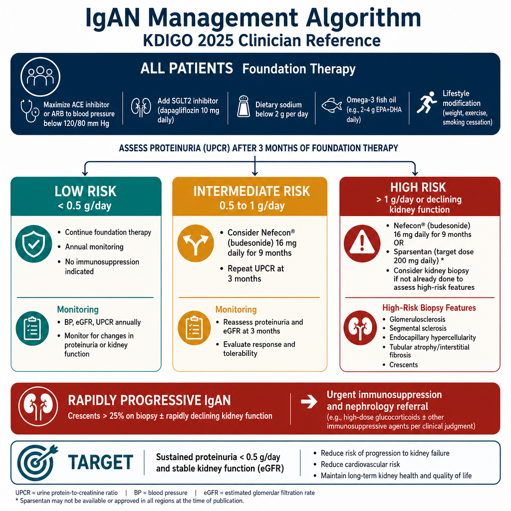
Supportive Care Foundation ALL PATIENTS
Maximize RAS blockade (ACEi or ARB to maximum tolerated dose — irbesartan 300mg, telmisartan 80mg, enalapril 40mg, etc.). Target UPCR <0.5 g/g, ideally <0.3 g/g. BP target <130/80 mmHg. Lifestyle: low sodium (<2 g/day), avoid NSAIDs, quit smoking. KDIGO 2025 proteinuria target is more aggressive than the previous 1 g/day threshold.
SGLT2 Inhibitor eGFR ≥20, ALL IgAN
Dapagliflozin 10mg OD or empagliflozin 10mg OD — added regardless of diabetes status if eGFR ≥20 and proteinuria persists. IgAN subgroup data from DAPA-CKD and EMPA-KIDNEY demonstrate 30–40% relative risk reduction in CKD progression. Available locally as Catania/Rhea (dapagliflozin) or generic empagliflozin. First-line addition after optimized RAS blockade. KDIGO 1B
Sparsentan (Replace ARB) UPCR ≥1.0–1.5 g/g persisting
Dual ETA + AT1 receptor antagonist. PROTECT trial (n=404): −49.8% UPCR vs irbesartan at 36 weeks; chronic eGFR slope +1.1 mL/min/yr (P=0.037). Full US FDA + EU approval 2024. South Korea/Taiwan/Singapore approved. Japan NDA 2026 (Chugai/Renalys — Phase III: −58.5% UPCR in Japanese patients). Philippines: SAR access only. Replaces ARB in the supportive backbone — non-immunosuppressive, compatible with SGLT2i. KDIGO 2B
REMS requirements (US/EU): LFT monitoring q3 months; teratogenic (contraindicated in pregnancy).
Targeted-Release Budesonide (Nefecon/Tarpeyo) UPCR ≥0.75–1.0 g/g persisting
Mucosal immunosuppressant — delivers budesonide to distal ileum Peyer's patches; reduces Gd-IgA1 production. NefIgArd (n=364): eGFR slope difference −2.95 mL/min/yr (P<0.0001) vs placebo; time-weighted average eGFR difference +5.05 mL/min/1.73m² at 2 years. 9-month course; proteinuria reduction durable 15 months off drug. Full US FDA + EU + UK approval. China NMPA approved (NRDL Jan 2025). South Korea approved Nov 2024. Singapore (Nefegan). Taiwan approved 2024. Japan — Viatris in development. Philippines: SAR access only. Complementary to sparsentan (different hits). KDIGO 2B
Systemic Immunosuppression HIGH RISK: UPCR >1 g/g despite Steps 1–4
Modified TESTING protocol (low-dose methylprednisolone IV + oral prednisolone) for selected patients with persistent proteinuria >1 g/day, active Oxford E score, and eGFR >30, who are not candidates for or have failed Steps 3–4. High infection and metabolic risk — use with strict monitoring. Mycophenolate: only in Chinese patients per KDIGO (MMF more effective in Chinese cohort per RCT). Rituximab: insufficient evidence for IgAN (not recommended KDIGO 2025). KDIGO 2B
Rapidly Progressive IgAN URGENT — ≥50% eGFR decline in ≤3 months
Oxford C2 (crescentic IgAN) or rapid GFR decline: cyclophosphamide + high-dose systemic glucocorticoids per ANCA vasculitis KDIGO 2024 protocol. Rituximab insufficient evidence — not recommended. Repeat biopsy indicated if no response. Ensure transfer to institution with CRRT capability if AKI occurs.
Drug Reference Table — IgAN Philippines 2025
| Drug | Class / Mechanism | Key Trial Data | KDIGO 2025 | PH Availability |
|---|---|---|---|---|
| ACEi / ARB (enalapril, losartan, irbesartan, telmisartan) | RAS blockade — reduces intraglomerular pressure, proteinuria | Foundational — no RCT vs no treatment; established surrogate data across cohorts | 1A | Available |
| Dapagliflozin (Catania / Rhea), Empagliflozin | SGLT2 inhibitor — haemodynamic + metabolic renoprotection | DAPA-CKD IgAN subgroup: 33% CKD progression reduction. EMPA-KIDNEY: consistent benefit | 1B | Available |
| Sparsentan (Filspari) | Dual ETA + AT1 antagonist — replaces ARB in backbone | PROTECT (n=404): −49.8% UPCR at 36wks vs irbesartan; chronic slope +1.1 mL/min/yr (P=0.037); absolute eGFR +3.8 mL/min at 110 weeks | 2B | SAR only |
| Budesonide DR (Nefecon / Tarpeyo / Kinpeygo / Nefegan) | Targeted mucosal IS — reduces Gd-IgA1 production at Peyer's patches | NefIgArd (n=364): eGFR slope −2.95 mL/min/yr benefit (P<0.0001); TWA eGFR +5.05 mL/min/1.73m² at 2yrs; durable at 15 months off drug | 2B | SAR only |
| Iptacopan (Fabhalta) | Factor B inhibitor — alternative complement pathway | APPLAUSE-IgAN interim: −38% UPCR at 9 months vs placebo (P<0.0001). Full data pending. | 2C | Not registered |
| Atrasentan (Vanrafia) | Selective ETA receptor antagonist | ALIGN: −38% UPCR reduction. US accelerated approval Apr 2025. | 2C | Not registered |
| Sibeprenlimab (Voyxact) | Anti-APRIL monoclonal antibody — B-cell modulation | VISIONARY: −56.6% UPCR at 12 months. US accelerated approval Nov 2025. | 2C | Not registered |
| Prednisolone (modified TESTING protocol) | Systemic IS — broad immunosuppression | TESTING (modified): reduced GFR decline vs placebo in high-risk subset; significant adverse events at high dose (reduced with modified protocol) | 2B | Available |
| Mycophenolate mofetil | Antimetabolite IS | Benefit only in Chinese cohort (Han et al., 77% composite reduction at 3 years). No benefit in Western populations. | 2B (Chinese only) | Available |
🖨 Quick Reference — Print & Post
Refer when: Microhematuria >3 months | UPCR >0.5 g/g | eGFR <60 | Unexplained HTN <40 yrs | Family hx kidney disease
Send with referral: Recent urinalysis + microscopy | Creatinine + eGFR | UPCR | BP log | ANA/dsDNA/C3/C4 if done | Current medication list
Proteinuria targets (KDIGO 2025): Goal <0.5 g/day, ideally <0.3 g/day | Monitor q3–6 months
SAR pathway (Philippines): FDA CDRR Special Access Route — nephrologist-initiated for sparsentan or budesonide DR. Application at cdrr.fda.gov.ph.
Referral Criteria & Philippine Access Pathway
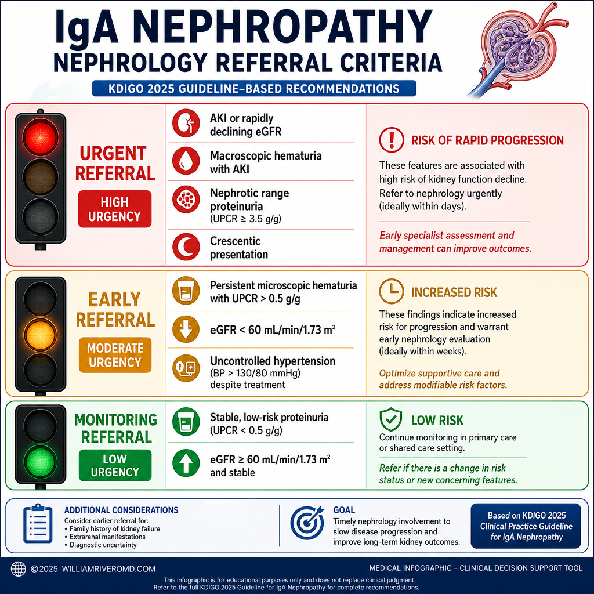
Refer Now — Urgent
- eGFR <30 mL/min/1.73m² at any point
- ≥50% eGFR decline over ≤3 months
- UPCR >3.0 g/g or frank nephrotic syndrome
- Crescentic pattern suspected (RPGN presentation)
- Macrohematuria + AKI (RBC cast obstruction)
- Malignant hypertension with hematuria
Refer Soon — Within 4–6 Weeks
- Persistent UPCR >0.5 g/g on ≥2 occasions 3 months apart
- Persistent microhematuria >3 months (acanthocytes on microscopy)
- eGFR 30–60 with hematuria and/or proteinuria
- Unexplained hypertension in patient <40 years
- Family history of IgAN, Alport syndrome, or ADPKD
- IgAN diagnosis in a sibling → screen other siblings
The "watchful waiting trap" — a clinical safety issue
Isolated microscopic hematuria without proteinuria is commonly observed conservatively for years at the primary care level before nephrology referral. International data consistently shows that proteinuria develops before eGFR decline — and the proteinuria-to-ESKD hazard relationship begins at 0.5 g/day, not 1 g/day (previous threshold). By the time UPCR rises above 1 g/g, significant mesangial scarring (Oxford T score) has often accumulated. In Filipino patients already presenting late (mean eGFR 56 at NKTI), further delay in referral compounds an already adverse prognosis. Microscopic hematuria without proteinuria warrants annual monitoring with urinalysis + UPCR + eGFR — not simple reassurance.
SAR / Compassionate Use Pathway for Sparsentan or Budesonide DR
Document clinical need
Biopsy-proven IgAN + UPCR ≥0.8–1.0 g/g despite maximum optimized RAS blockade + SGLT2i for ≥3 months. Document full medication history, eGFR trend, and Oxford MEST-C score.
Submit SAR application to FDA CDRR
Access at cdrr.fda.gov.ph — Compassionate Special Permit (CSP) or Emergency Use pathway. Required: physician endorsement, clinical abstract, full prescription, patient consent. Processing time: 5–15 working days for initial review.
Contact Renalys / Chugai (sparsentan) or Everest Medicines (budesonide DR)
Renalys/Chugai holds PH license for sparsentan. Everest Medicines covers Greater China/Singapore/Korea — not Philippines for budesonide DR. International pharmacy access via licensed importers with CSP number. Contact PSN (Philippine Society of Nephrology) for updated institutional access guidance.
Enrol in monitoring program
Sparsentan: LFT q3 months (updated REMS 2025), contraindicated in pregnancy, teratogenic warning. Budesonide DR: glucose and BP monitoring (mild corticosteroid effects), 9-month course only. Both require eGFR + UPCR monitoring q3 months to assess response.
Monitoring & Follow-up Framework
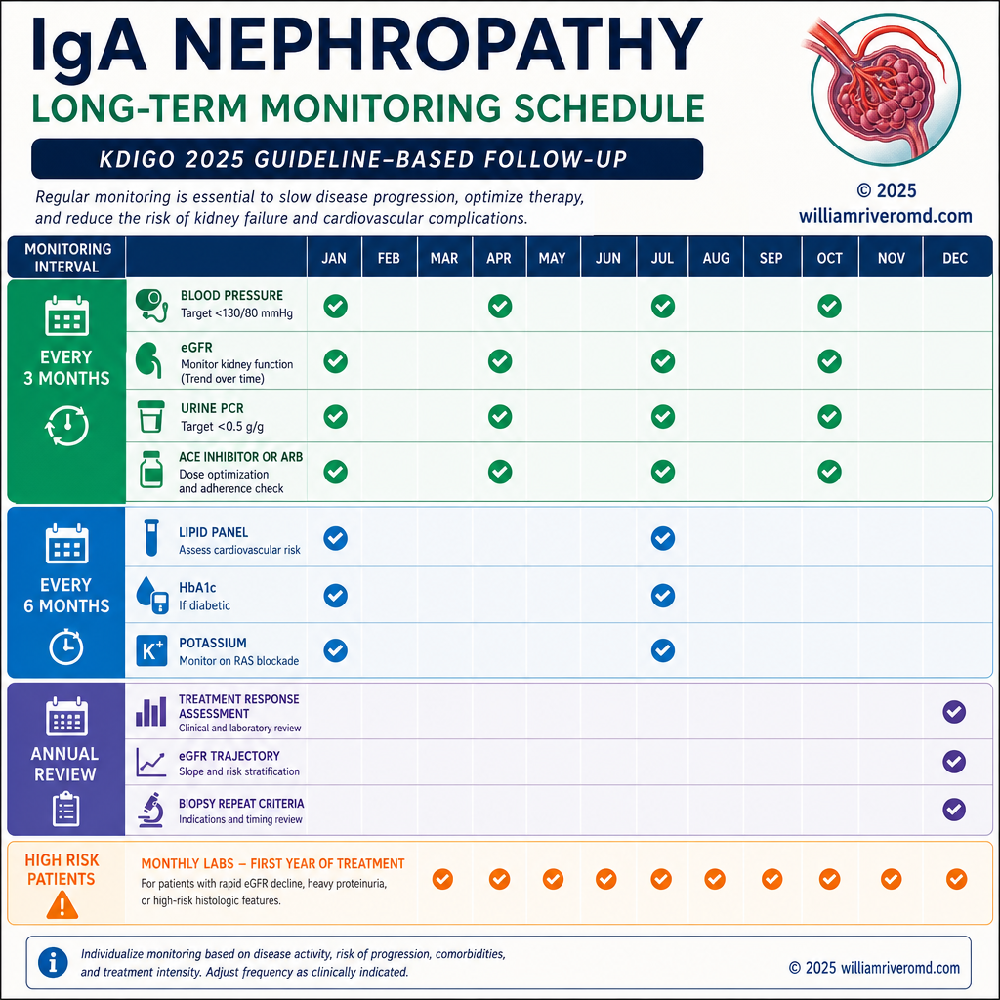
| Parameter | Target (KDIGO 2025) | Frequency | Notes |
|---|---|---|---|
| UPCR (spot urine PCR) | <0.5 g/g (goal <0.3 g/g) | Every 3 months (first year); every 6 months if stable | Time-averaged UPCR more predictive than single value |
| eGFR (CKD-EPI 2021) | Stable or slope <2 mL/min/yr decline | Every 3 months (first year); every 6 months if stable | eGFR slope over 2+ years is primary outcome benchmark |
| Blood pressure | <130/80 mmHg | Every visit; home BP log encouraged | Ambulatory BP preferred if white-coat or masked HTN suspected |
| Urine microscopy / hematuria | Resolution of microhematuria now a KDIGO 2025 emerging endpoint | Every 3–6 months | Persistent hematuria independently associated with progression; correlates with active inflammation |
| Serum potassium | 3.5–5.5 mEq/L | Every 3 months on RAS blockade + SGLT2i | Hyperkalemia risk with dual RAS/SGLT2i. Finerenone if indicated for additional renoprotection. |
| HbA1c / glucose | HbA1c 7–8% (if DM comorbid) | Every 3–6 months | SGLT2i adds glycaemic benefit in DM; hypoglycaemia risk low in non-DM |
| Repeat biopsy | Indicated if: unexplained eGFR decline, treatment non-response, new nephrotic-range proteinuria | Not routine — per clinical indication | Oxford MEST-C trajectory on repeat biopsy guides treatment intensification or withdrawal |
| Lipids / cardiovascular risk | LDL <55 mg/dL (very high risk), LDL <70 mg/dL (high risk) per 2026 ACC/AHA | Annually | IgAN with persistent proteinuria = high CV risk; statin use should be optimized |
KDIGO 2025 — Key shifts from previous guideline
- Proteinuria target lowered from <1 g/day to <0.5 g/day (ideally <0.3 g/day). Earlier intervention threshold.
- Biopsy threshold lowered to UPCR ≥0.5 g/g (from 1.0 g/g) when novel therapies are being considered.
- SGLT2 inhibitors elevated to recommended for all patients with eGFR ≥20, regardless of diabetes (previously suggested).
- Microhematuria recognized as independent risk factor and emerging therapeutic endpoint — its resolution with targeted therapy noted.
- Nefecon and sparsentan formally incorporated into treatment algorithm as evidence-based options for patients not meeting targets on supportive care alone.
- Rituximab not recommended — insufficient evidence in IgAN.
ERA 2026 Glasgow — IgAN Update 2025–2026
Synthesis of presentations, case discussions, and expert panel commentary from the European Renal Association (ERA) Congress 2026 (Glasgow, Scotland) on contemporary IgAN management — covering targeted-release budesonide (Nefecon / Kinpeygo), sparsentan, NefIgArd long-term and open-label extension data, real-world experience, and the KDIGO 2025 Clinical Practice Guideline. A recurring theme was the shift from supportive care plus systemic corticosteroids toward a multi-target, disease-modifying strategy.
Interpretive note. The content below reflects scientific presentations and expert discussion at ERA 2026 and should be read alongside the original peer-reviewed studies, ongoing investigations, and evolving guideline recommendations. Several real-world figures cited are from small observational cohorts presented at the meeting.
Central message (J. Barratt and panel)
IgAN should no longer be viewed simply as a proteinuric CKD, but as a chronic immune-mediated disease with downstream CKD consequences. Modern management requires treating two pathways simultaneously: the underlying immunologic disease process and the generic CKD-progression pathways that drive nephron loss. Addressing only one leaves ongoing kidney-function decline.
Lifetime Risk — Why Young Patients Are Not "Low-Risk"
UK RaDaR Registry data presented at the congress underscore that age at diagnosis has major implications for lifetime kidney-failure risk. Patients diagnosed between 18–30 years carry a substantially increased lifetime probability of kidney failure — by their late 50s to early 60s, approximately three-quarters may have reached kidney failure. A young adult with persistent proteinuria must therefore be managed on a 30–50 year horizon, not a 3–5 year one.
KDIGO 2025 — The Dual-Pathway Framework
The updated KDIGO approach separates treatment into two simultaneous goals, pursued alongside parallel cardiovascular risk reduction (BP control, lipid management, lifestyle).
Pathway 1 — IgAN-specific drivers of nephron loss
Goals: stop synthesis of pathogenic IgA, reduce immune-complex formation, prevent IgA-mediated injury.
Options: targeted-release budesonide (Nefecon/Kinpeygo); systemic glucocorticoids (selected); mycophenolate mofetil (selected populations); hydroxychloroquine (China); tonsillectomy (Japan); emerging APRIL- and complement-directed agents.
Pathway 2 — Generic CKD responses
Goals: reduce hyperfiltration and proteinuria, control blood pressure, slow fibrosis.
Options: lifestyle modification; ACEi/ARB (maximal tolerated RAS blockade); sparsentan; SGLT2 inhibitor. These preserve nephron mass but do not modify upstream immunology.
Why supportive therapy alone is not enough
ACEi/ARB, SGLT2 inhibitors, and endothelin antagonists slow CKD progression but do not prevent Gd-IgA1 production, pathogenic autoantibody formation, or immune-complex generation. Supportive therapy alone does not directly modify the underlying disease process — hence the case for disease-specific therapy alongside CKD-protective care.
NefIgArd & Open-Label Extension — Evidence for Disease Modification
NefIgArd Phase 3 enrolled biopsy-proven primary IgAN with proteinuria ≥1 g/day despite optimized RAS blockade and eGFR ≥35 mL/min/1.73m². Treatment was targeted-release budesonide 16 mg daily × 9 months vs placebo, with 15 months further observation; the primary endpoint was time-weighted average eGFR over 2 years.
Biomarker effects across the first three "hits" support genuine disease modification rather than a purely antiproteinuric effect. Early proteinuria reduction translated into long-term kidney protection.
A single 9-month course does not cure IgAN
After discontinuation, Gd-IgA1, autoantibodies, immune complexes, and proteinuria rose again and eGFR decline resumed. Long-term management may require repeat treatment cycles, maintenance strategies, or rational combination therapy — analogous to the modern heart-failure model.
Targeted-Release Budesonide — Safety vs Systemic Steroids
Kinpeygo is a targeted-release budesonide designed to release in the distal ileum at the Peyer's-patch level. Congress slide data placed systemic exposure at roughly 16 mg Kinpeygo ≈ 8 mg prednisolone equivalent (cortisol-suppression / glucocorticoid-exposure basis) — translating to lower rates of hyperglycemia, weight gain, osteoporosis, serious infection, and Cushingoid features than traditional prednisone.
| Open-Label Extension — Safety Signal | Observation |
|---|---|
| Any adverse event | ~87% — most mild, non-serious, reversible |
| Serious adverse events | ~8.4% |
| Treatment-related serious AEs | Rare to absent |
| Discontinuation due to AE | ~5.9% |
| Overall | Substantially safer profile than traditional systemic steroid regimens |
Sparsentan — Real-World Experience & Combination Therapy
Sparsentan is a dual endothelin-A and angiotensin-II receptor antagonist providing potent antiproteinuric and haemodynamic nephroprotection. It does not directly suppress pathogenic IgA production — it is a CKD-protective, not immunologic, therapy.
Real-world (Germany)
Baseline UPCR ~1.8–2.0 g/g declined rapidly toward ~0.4–0.5 g/g — a ~70–80% proteinuria reduction.
Sparsentan + Kinpeygo
Small real-world cohort: 42% complete remission (UPCR <0.3 g/g), with additional patients reaching UPCR <1 g/g. No unexpected adverse events.
Why combine
The two act through different mechanisms — mucosal immune source (Kinpeygo) vs downstream glomerular injury (sparsentan) — so the combination is biologically complementary and may yield deeper, additive proteinuria reduction.
Defining "Disease Modification" in IgAN
A practical framework proposed at the congress distinguishes two complementary categories.
Disease-specific modification
Slows eGFR decline / reduces kidney-failure endpoints and shows biologically plausible change in pathogenic biomarkers (Gd-IgA1, anti-Gd-IgA1 antibodies, immune complexes). Examples: Nefecon, APRIL inhibitors.
CKD-focused modification
Slows eGFR decline with benefit in well-conducted Phase 3 trials applicable to IgAN, primarily via nephron preservation rather than upstream immunology. Examples: SGLT2 inhibitors, endothelin antagonists, RAS blockade.
Risk-Stratified Practical Approach (2025–2026)
| Risk Tier | Characteristics | Management |
|---|---|---|
| Low | Proteinuria <0.5–0.75 g/day; stable eGFR | RAAS blockade · SGLT2 inhibitor · lifestyle optimization |
| Intermediate | Persistent proteinuria >0.75–1 g/day | Continue optimized supportive care · consider Kinpeygo |
| High | Persistent proteinuria >1–1.5 g/day; progressive eGFR decline | Sparsentan · Kinpeygo · potential combination therapy |
| Very High | Rapid eGFR loss; crescents; active inflammatory lesions | Individualized immunosuppression · clinical-trial enrolment where available |
Illustrative Cases
Case 1 — the young "stable" patient (Barratt)
26-year-old male, biopsy-proven IgAN: eGFR ~61, proteinuria ~2.3 g/day, SBP 138 mmHg. Despite preserved function he is not low-risk — lifetime risk dominates. Over 2020→2024 on ramipril + dapagliflozin he lost ~10% of function with persistent proteinuria; disease-specific therapy (Nefecon) was initiated once available.
Teaching point: proteinuria reduction is the most important modifiable predictor of long-term outcome.
Case 2 — "stable" disease that wasn't
Long-standing IgAN, initial proteinuria ~0.5 g/g with preserved function and no repeat biopsy. Proteinuria climbed progressively toward ~2 g/day, prompting escalation beyond supportive care (consideration of Kinpeygo and/or sparsentan).
Teaching point: apparently stable patients can become high-risk through progressive proteinuria — keep monitoring.
Clinical Pearls
Take-home points
- Proteinuria is both a treatment target and a surrogate for long-term kidney survival — aim for <0.5 g/day, ideally <0.3 g/day.
- Nefecon targets disease initiation at the gut mucosal immune level; sparsentan targets downstream glomerular injury and proteinuria.
- Because they act on different mechanisms, combination therapy may be additive.
- Young patients require explicit lifetime-risk assessment; persistent proteinuria >1 g/day flags substantial risk.
- Modern IgAN care preserves nephron mass while minimizing systemic steroid exposure.
- Sparsentan is an important nephroprotective therapy but is not primarily an immunologic treatment.
Bottom line. IgAN management has shifted from "treat proteinuria and monitor" to treating the immune disease and the CKD consequences simultaneously: supportive care + RAS blockade + SGLT2 inhibitor + targeted-release budesonide (Kinpeygo/Nefecon) ± sparsentan, aiming for durable proteinuria remission, slower eGFR decline, and prevention of kidney failure — especially in young patients with decades of risk ahead. Note for Philippine practice: Nefecon and sparsentan remain SAR-access only (FDA CDRR Special Access Route, nephrologist-initiated) — see the Treatment and Referral sections above.
W Rivero, MD, FPCP, DPSN
Specialist in Internal Medicine, Nephrology, and Clinical Nutrition. Available for nephrology consultations at Fe Del Mundo Medical Center (Mon/Sat), St. John Biocare Center (Wed), RCU ONA/RLMMC Angeles City (Tue), and St. Josef Renal Care Center Marilao (Thu). For complex IgAN cases requiring SAR medication access or proteinuria-refractory management, direct referral welcome via SeriousMD.